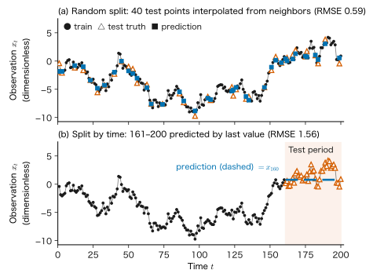

Chapter 22Sequence Data and Hidden Markov Models — Data with an Order
- The records of a temperature sensor on a heat-treatment furnace are saved every hour. The state of the furnace (normal, or abnormal because of, for example, heater degradation) cannot be seen directly. How can we estimate from the records alone “when the furnace entered the abnormal state”? How does the answer change between judging on the spot and reviewing the whole record afterwards?
- How can we write the probability $p(x_1,x_2,\dots,x_T)$ of a sentence? How far does a model that looks only at the last few words take us?
- For data that change with time, why must we not split the training data and the validation data at random?
In the previous chapters, we treated each point of the data $\data=\{(\bm{x}_n,y_n)\}$ as drawn independently of the others (independent and identically distributed, i.i.d.). For an experiment that measures fired samples one at a time, this assumption is reasonably natural. However, furnace temperature records, the capacity of a battery under repeated charge and discharge, and the order of words in a sentence all have order that carries meaning. If the temperature was high an hour ago, it is likely to be high now as well. If we discard this dependence, we discard most of the information we have.
In this chapter we build up a way to write the probability of data with an order (sequence data), starting from the most straightforward one, the autoregressive decomposition. We introduce the Markov model, which shrinks the conditioning to “only the immediately preceding item,” and the n-gram; then the hidden Markov model (HMM), which places a sequence of directly unseen states behind the observations; and we derive the pillars of its computation, the forward algorithm and backward algorithm and the Viterbi algorithm. We work through an example with two states and three time steps entirely by hand and check that it agrees with the full enumeration of $2^{3}=8$ cases. We also cover an introduction to the Kalman filter for continuous hidden states, the leakage of future information that is easy to cause with time series, and applications to furnace monitoring and battery degradation.
- Derive the autoregressive decomposition from the product rule, and show numerically that the table grows exponentially as the conditioning gets longer.
- Compute by hand the stationary distribution of a two-state Markov chain from its transition matrix, and the speed at which the chain approaches it. Estimate n-gram probabilities by counting, and explain their limitations.
- Write the joint distribution of a hidden Markov model in terms of $\pi$, $\bm{A}$, and $\bm{B}$, and relate it to the graph of Chapter 19.
- Derive the equations of the forward algorithm, the backward algorithm, and smoothing one line at a time, calculate them by hand with two states and three time steps, and check them against full enumeration. Avoid loss of significance by scaling.
- Explain how the questions answered by filtering, smoothing, and the Viterbi algorithm differ, and construct an example in which the two do not agree.
- Derive the prediction and update equations of the one-dimensional Kalman filter from the product of Gaussian distributions.
- Design a validation that “cuts by time” for time series, and notice features that look into the future.
Sections for the introductory route: 22.1, 22.2, 22.13. On the introductory route, once you have grasped how to write the probability of a sequence by the autoregressive decomposition and the limitations of a model that looks only at the immediately preceding item, you may go on to the next chapter, Chapter 23 (RNN). Sections marked “Detailed Route” may be skipped on a first reading.
22.1 Sequence Data — Non-I.I.D. Data and the Autoregressive Decomposition
22.1.1 Data in which order matters
Sequence data are values $x_1,x_2,\dots,x_T$ arranged in the order of position (time step) $t=1,2,\dots,T$. We call $T$ the sequence length and call $t$ the position or time step. In this book we write a contiguous portion as $x_{s:t}\equiv(x_s,x_{s+1},\dots,x_t)$ and everything before position $t$ as $x_{\lt t}\equiv(x_1,\dots,x_{t-1})$ (the same notation as in Chapter 2). Each $x_t$ may be a real number (a temperature, a capacity) or one of finitely many values (a “low, medium, high” category, a word). In the latter case, we call the number of possible values the vocabulary size $V_{\mathrm{voc}}$ and represent a value by its number $v\in\{1,\dots,V_{\mathrm{voc}}\}$.
Sequence data differ from i.i.d. data in that nearby values resemble one another (or continue in a regular way). For i.i.d. data, the joint distribution splits into a product of marginal distributions, $p(x_{1:T})=\prod_t p(x_t)$, and the probability does not change under permutation. For sequence data, permuting changes the probability. “The temperature rose and then fell” and “the temperature fell and then rose” are different events.
22.1.2 The autoregressive decomposition
Any joint distribution can be factorized, from the front, into a product of conditional probabilities by applying the product rule of Chapter 2, $p(a,b)=p(b\mid a)\,p(a)$, repeatedly. For $T=3$ this reads
$$ \begin{aligned} p(x_1,x_2,x_3)&=p(x_3\mid x_1,x_2)\,p(x_1,x_2)\\ &=p(x_3\mid x_1,x_2)\,p(x_2\mid x_1)\,p(x_1) \end{aligned} $$The first line is the product rule with $a=(x_1,x_2)$ and $b=x_3$; in the second line we applied the product rule once more to $p(x_1,x_2)$. Continuing in the same way up to $T$ factors, we obtain the following.
Theorem 22.1: Autoregressive decomposition
For any joint distribution $p(x_{1:T})$,
\begin{equation} p(x_{1:T})=\prod_{t=1}^{T}p(x_t\mid x_{\lt t}) \label{eq:22-ar} \end{equation}holds. The factor for $t=1$ is read as the unconditioned $p(x_1)$.
Eq. \eqref{eq:22-ar} is not an approximation but an identity, and it makes no assumption at all (Chapter 2, Section 2.2). It reads: “the probability of the whole sequence is the probability of the first element × the probability of the second element after seeing the first × …”. For text, the product of the probabilities of predicting the words one at a time is the probability of the whole text. If we build a model that predicts the next single element, we obtain a probability model of the whole sequence. This is the starting point of the training objective of GPT in Chapter 26 (the name “autoregressive decomposition” comes from the fact that each factor is conditioned on “its own past”).
22.1.3 The problem of conditions growing too long
Eq. \eqref{eq:22-ar} is correct, but as it stands it cannot be learned. When $x_t$ takes $V_{\mathrm{voc}}$ values, holding $p(x_t\mid x_{\lt t})$ as a table requires, for each of the $V_{\mathrm{voc}}^{\,t-1}$ combinations of values of the condition $x_{\lt t}$, $V_{\mathrm{voc}}-1$ probabilities (since the probabilities sum to 1, one of them is determined by the rest). Summing from $t=1$ to $T$ gives
$$ \sum_{t=1}^{T}V_{\mathrm{voc}}^{\,t-1}(V_{\mathrm{voc}}-1)=V_{\mathrm{voc}}^{\,T}-1 $$probabilities (a geometric series: the left-hand side is $V_{\mathrm{voc}}-1$ multiplied by $1+V_{\mathrm{voc}}+\dots+V_{\mathrm{voc}}^{\,T-1}=(V_{\mathrm{voc}}^{\,T}-1)/(V_{\mathrm{voc}}-1)$), which is the same number as holding the table of the joint distribution directly. Merely factorizing has saved nothing. To save anything we need either an assumption that shrinks the condition (the Markov property in Section 22.2, hidden states in Section 22.3) or a function that summarizes the condition into a fixed-length vector (the RNNs of Chapter 23, the Transformers of Chapters 24–26). This chapter takes the former route, and the following chapters take the latter.
Example 22.1: Computing the probability of a sequence with the autoregressive decomposition
The deviation of a furnace temperature is recorded every hour in three categories, “low, medium, high” ($V_{\mathrm{voc}}=3$). Suppose that from the records over a certain period we estimate $p(x_1=\text{low})=0.5$, $p(x_2=\text{medium}\mid x_1=\text{low})=0.4$, and $p(x_3=\text{high}\mid x_1=\text{low},x_2=\text{medium})=0.2$ (numbers for teaching purposes). (1) Find the probability of the sequence “low, medium, high”. (2) Count, factor by factor of Eq. \eqref{eq:22-ar} and then sum, the number of free parameters needed to hold the joint distribution of sequences of length $T=4$ as a table. (3) What is that number for text with a vocabulary of $V_{\mathrm{voc}}=3\times10^{4}$ words and length $T=20$? (Answer in terms of the common logarithm.)
Solution. (1) Substituting into Eq. \eqref{eq:22-ar},
$$ \begin{aligned} &p(\text{low},\text{medium},\text{high})\\ &=p(\text{low})\,p(\text{medium}\mid\text{low})\,p(\text{high}\mid\text{low},\text{medium})\\ &=0.5\times0.4\times0.2=0.04 . \end{aligned} $$(2) For $t=1$: with no condition, $3-1=2$ parameters. For $t=2$: the condition $x_1$ has 3 values, giving $3\times2=6$ parameters. For $t=3$: the condition $(x_1,x_2)$ has $3^{2}=9$ values, giving $9\times2=18$ parameters. For $t=4$: there are $3^{3}=27$ values, giving $54$ parameters. The total is $2+6+18+54=80=3^{4}-1$, which agrees with the $3^{4}=81$ cells of the joint-distribution table minus one for normalization.
(3) $V_{\mathrm{voc}}^{\,T}-1\approx(3\times10^{4})^{20}$. Its common logarithm is $20\log_{10}(3\times10^{4})=20\times4.4771=89.54$, so the number is about $3.5\times10^{89}$. Building such a table is impossible in principle.
22.2 Markov Models and n-grams — Looking Only at the Immediately Preceding Item
22.2.1 First-order Markov property and the transition matrix
The strongest way of compressing the conditioning is to assume that “the next value is determined by the immediately preceding value alone (earlier values act only through the preceding one).”
Definition 22.1: First-order Markov chain and transition matrix
A sequence of values $z_t\in\{1,\dots,K\}$ that satisfies, for all $t\ge2$,
\begin{equation} p(z_t\mid z_{1:t-1})=p(z_t\mid z_{t-1}) \label{eq:22-markov} \end{equation}is called a first-order Markov chain. We call $K$ the number of states. When the right-hand side does not depend on $t$ (that is, when it is time-homogeneous), the matrix $\bm{A}\in\R^{K\times K}$ formed by arranging
$$ A_{ij}\equiv p(z_t=j\mid z_{t-1}=i)\qquad(i,j=1,\dots,K) $$is called the transition matrix. Row $i$ is the “current state” and column $j$ is the “next state,” and each row sums to 1 ($\sum_jA_{ij}=1$: from state $i$ the chain must move somewhere). Let the initial distribution be $\pi_i\equiv p(z_1=i)$.
We use $z$ for the state here because in Section 22.3 we will use this chain as a “hidden state” (when the Markov property is assumed for the observations themselves, we may write $x_t$). A note on notation: $\pi_i$ is not the circle constant but the initial distribution (Chapter 17 uses the same letter for the mixing coefficients).
Substituting Eq. \eqref{eq:22-markov} into the autoregressive decomposition \eqref{eq:22-ar}, the joint distribution becomes
\begin{equation} p(z_{1:T})=\pi_{z_1}\prod_{t=2}^{T}A_{z_{t-1}z_t} \label{eq:22-markov-joint} \end{equation}The parameters are only the $K-1$ of $\pi$ and the $K(K-1)$ of $\bm{A}$, independent of $T$.
22.2.2 Time evolution of the state distribution and the stationary distribution
Denote the distribution of the state at time step $t$ by the column vector $\bm{p}_t\in\R^{K}$ (with components $p_t(j)=p(z_t=j)$). From the sum rule and the product rule,
$$ \begin{aligned} p_t(j)&=\sum_{i=1}^{K}p(z_{t-1}=i)\,p(z_t=j\mid z_{t-1}=i)\\ &=\sum_{i=1}^{K}p_{t-1}(i)\,A_{ij} \end{aligned} $$and in matrix form,
\begin{equation} \bm{p}_t^{\tp}=\bm{p}_{t-1}^{\tp}\bm{A},\qquad \bm{p}_t^{\tp}=\bm{\pi}^{\tp}\bm{A}^{t-1} \label{eq:22-chapman} \end{equation}(where $\bm{\pi}=(\pi_1,\dots,\pi_K)^{\tp}$). The reason $\bm{A}$ multiplies the row vector from the right is that the rows of $\bm{A}$ represent the “present.” A distribution $\bm{p}^{*}$ satisfying $\bm{p}^{\tp}\bm{A}=\bm{p}^{\tp}$ is called a stationary distribution. Once the chain has this distribution, it keeps the same distribution at all later time steps.
For two states ($K=2$) we can solve it by hand. Let $A_{12}=1-A_{11}$ (the probability of moving from 1 to 2) and $A_{21}=1-A_{22}$. The time evolution of the probability $p_t(2)$ of being in state 2 is
$$ \begin{aligned} p_t(2)&=p_{t-1}(1)A_{12}+p_{t-1}(2)A_{22}\\ &=\bigl(1-p_{t-1}(2)\bigr)A_{12}+p_{t-1}(2)\,(1-A_{21})\\ &=A_{12}+(1-A_{12}-A_{21})\,p_{t-1}(2) \end{aligned} $$The stationary distribution follows by setting $p_t(2)=p_{t-1}(2)=p^{*}(2)$, which gives $p^{*}(2)=A_{12}+(1-A_{12}-A_{21})p^{*}(2)$, that is, $p^{*}(2)(A_{12}+A_{21})=A_{12}$. Subtracting this equation from the one above, we see that the deviation $p_t(2)-p^{*}(2)$ is multiplied by $\lambda\equiv1-A_{12}-A_{21}$ at every time step. Summarizing, we obtain the following formula.
Formula 22.2: Stationary distribution and convergence of a two-state Markov chain
If $A_{12}+A_{21}\gt0$, then
\begin{equation} \begin{gathered} p^{*}(1)=\frac{A_{21}}{A_{12}+A_{21}},\\ p^{*}(2)=\frac{A_{12}}{A_{12}+A_{21}},\\ p_t(2)-p^{*}(2)\\ =\lambda^{t-1}\bigl(\pi_2-p^{*}(2)\bigr),\\ \lambda=1-A_{12}-A_{21} \end{gathered} \label{eq:22-stationary} \end{equation}If $\abs{\lambda}\lt1$, the distribution approaches the stationary distribution from any initial distribution. $\lambda$ is the other eigenvalue of $\bm{A}$ (the first is 1: since each row sums to 1, $\bm{A}\bm{1}=\bm{1}$).
The expression for the stationary distribution is the same as the condition $p^{*}(1)A_{12}=p^{*}(2)A_{21}$ that “the amount flowing out from 1 to 2, $p^{*}(1)A_{12}$,” balances “the amount flowing in from 2 to 1, $p^{*}(2)A_{21}$” (the simplest example of the detailed balance of Chapter 21, Section 21.5). Another important quantity is the number of consecutive time steps spent in one state (the dwell time) $d$. After entering state $i$, the chain stays with probability $A_{ii}$ at each time step and leaves with probability $1-A_{ii}$, so $p(d)=(1-A_{ii})A_{ii}^{\,d-1}$ (a geometric distribution), and its mean is
$$ \begin{aligned} \Ex[d]&=\sum_{d=1}^{\infty}d\,(1-A_{ii})A_{ii}^{\,d-1}\\ &=\frac{1-A_{ii}}{(1-A_{ii})^{2}}=\frac{1}{1-A_{ii}} \end{aligned} $$(here $\sum_{d\ge1}d\,a^{d-1}=1/(1-a)^{2}$ is the equation obtained by differentiating the geometric series $\sum_d a^{d}=a/(1-a)$ with respect to $a$).
Example 22.2: The stationary distribution of a furnace's states and how fast the chain approaches it
Let the furnace states be 1 = normal and 2 = degraded (a state in which the temperature tends to overshoot, for example because of heater degradation), and let the hourly transition matrix have $A_{11}=0.97$ and $A_{22}=0.95$ (numbers for teaching purposes; the same as the default of the simulator in Section 22.6). (1) Find the stationary distribution. (2) Find the mean dwell times of the normal and degraded states, and compare them with (1). (3) Starting from $\pi_2=0.05$, find the first $t$ at which the difference between $p_t(2)$ and its stationary value is less than 0.01.
Solution. (1) $A_{12}=0.03$ and $A_{21}=0.05$. By Eq. \eqref{eq:22-stationary}, $p^{*}(1)=0.05/0.08=0.625$ and $p^{*}(2)=0.03/0.08=0.375$. Check: $0.625\times0.97+0.375\times0.05$ $=0.60625+0.01875=0.625$.
(2) For the normal state, $1/(1-0.97)\approx33.3$ hours; for the degraded state, $1/(1-0.95)=20$ hours. The long-run fraction of degraded time is $20/(33.3+20)=0.375$, which agrees with $p^{*}(2)$ in (1) (the stationary distribution is also the “ratio of dwell times”).
(3) $\lambda=1-0.03-0.05=0.92$. The difference is $\abs{0.05-0.375}\times0.92^{t-1}=0.325\times0.92^{t-1}$. Solving $0.325\times0.92^{t-1}\lt0.01$ gives $t-1\gt\ln(0.01/0.325)/\ln0.92$ $=(-3.481)/(-0.0834)=41.75$, so $t=43$ (then $p_{43}(2)=0.3652$).
![A figure with two panels, upper and lower. In the upper panel, the horizontal axis is the time step t and the vertical axis is the probability of being degraded. A solid line rising from the initial value 0.05 and a dashed line falling from the initial value 1 both approach the dotted line at 0.375. In the lower panel, the horizontal axis is the number d of consecutive time steps spent in the degraded state and the vertical axis is the fraction; the bar chart of the simulated chain overlaps the geometric-distribution curve closely. The mean is 20.](figs/ch22_fig22-2.svg)
numpy.random.default_rng(20261113), starting from state 1), and the solid line is the geometric distribution $(1-A_{22})A_{22}^{\,d-1}$. The mean is $1/(1-A_{22})=20$.22.2.3 n-grams — looking at the preceding n−1 items
The n-gram model assumes the Markov property for the text or symbol sequence itself. We compress the conditioning in Eq. \eqref{eq:22-ar} to the immediately preceding $n-1$ items,
\begin{equation} p(x_t\mid x_{\lt t})\approx p(x_t\mid x_{t-n+1:t-1}) \label{eq:22-ngram} \end{equation}(with $n=2$ a bigram and $n=3$ a trigram; $n=2$ is exactly a first-order Markov chain). Each conditional probability is estimated as a ratio of counts tallied in the training sequence. For a bigram, letting $\mathrm{cnt}(u,v)$ be “the number of times $v$ came immediately after $u$,”
$$ \hat{p}(x_t=v\mid x_{t-1}=u)=\frac{\mathrm{cnt}(u,v)}{\sum_{v'}\mathrm{cnt}(u,v')} $$As in Chapter 4, this is maximum likelihood estimation of a categorical distribution (an independent categorical distribution is fitted to each row). In his 1948 paper, Shannon approximated English letters and words with n-grams to generate sentences and showed that the larger $n$ is, the more English-like the output becomes.
Example 22.3: Estimating a bigram from a record
The deviation of a furnace sensor was recorded in three categories, and the first 20 hours were
low medium low medium low medium high low low low low medium low low medium low medium low medium medium
(the first 20 items of the default sequence of the simulator in Section 22.6; synthetic data for teaching purposes). (1) Count the 19 adjacent pairs, make a table of bigram counts, and find the maximum likelihood estimates of the transition probabilities. (2) What is $p(\text{high}\mid\text{high})$ in this estimate? What is the problem? (3) With the estimate that adds 1 to the counts in each row (add-one smoothing), what does $p(\text{high}\mid\text{low})$ become?
Solution. (1) Counting by the preceding value (row) and the next value (column) gives
| $u\backslash v$ | low | medium | high | row sum |
|---|---|---|---|---|
| low | 4 | 7 | 0 | 11 |
| medium | 5 | 1 | 1 | 7 |
| high | 1 | 0 | 0 | 1 |
(The row sums total 19. The last “medium” has nothing after it, so it does not enter a row sum.) The maximum likelihood estimates are obtained by dividing each row by its sum: $\hat p(\cdot\mid\text{low})=(4/11,\,7/11,\,0)=(0.364,\,0.636,\,0)$, $\hat p(\cdot\mid\text{medium})=(5/7,\,1/7,\,1/7)$ $=(0.714,\,0.143,\,0.143)$, $\hat p(\cdot\mid\text{high})=(1,\,0,\,0)$.
(2) “High” appears only once and was immediately followed by “low,” so $\hat p(\text{high}\mid\text{high})=0$. Yet it is possible for “high” to continue (indeed, high does continue in the latter half of this sequence). If a pair with count 0 is given probability 0, the probability of any whole sequence containing that pair becomes 0, and the log-likelihood becomes $-\infty$. When data are scarce, an n-gram flatly declares a pair it has never seen to be “impossible.”
(3) With add-one smoothing the estimate is $(\mathrm{cnt}+1)/(\text{row sum}+3)$, so $p(\text{high}\mid\text{low})=(0+1)/(11+3)=1/14\approx0.071$. This is the posterior mean when a uniform Dirichlet distribution $\mathrm{Dir}(1,1,1)$ is placed as the prior distribution on each row, and it extends the beta distribution case of Chapter 4 ($a=b=1$) to three values.
22.2.4 Limitations of n-grams
An n-gram has two weaknesses. First, the number of parameters, $V_{\mathrm{voc}}^{\,n-1}(V_{\mathrm{voc}}-1)$, grows exponentially in $n$. For $V_{\mathrm{voc}}=3\times10^{4}$, this is about $9.0\times10^{8}$ for a bigram and about $2.7\times10^{13}$ for a trigram, and most pairs never appear in the training data even once (the problem of Example 22.3 (2) occurs on a large scale). Second, information further back than $n-1$ items cannot be used at all. What “it” refers to in “We fired that sample at 1300 °C. … (a few sentences) … The density of it is” cannot be determined without looking back dozens of words. Raising $n$ worsens the first problem, and lowering it leaves the second. The RNN of Chapter 23 tries to resolve this dilemma by summarizing the past into a continuous vector, and the attention of Chapter 24 does so by looking directly at the positions that are needed.
Even in a first-order Markov chain, $z_1$ and $z_{10}$ are not unrelated, but the information in $z_1$ is diluted by a factor of $\lambda$ at every time step (Eq. \eqref{eq:22-stationary}). A dependence such as “refers to a particular word no matter what comes in between” does not fit this pattern of exponential decay.
22.3 The Hidden Markov Model — A Sequence of Unseen StatesDetailed Route
22.3.1 The states are hidden; only observations are available
Let us return to the furnace example. What we want to know is the furnace's state (normal or degraded), but all that is recorded is the sensor value. Even when the furnace is normal, a “high” reading can appear by chance, and even when it is degraded, a “low” reading can appear. Suppose we assume a Markov chain on the sequence of states and regard each observation as generated probabilistically from the state at that time step alone. This is the hidden Markov model (HMM) (Figure 22.1(c)). There are no direct arrows between observations, but through the chain of states, observations at distant time steps also depend on each other. Unlike an n-gram, if the number of states is small the number of parameters stays small while the model can still express dependence over a long time (such as a period of degradation lasting for a while).
Definition 22.2: Hidden Markov model
For hidden states $z_t\in\{1,\dots,K\}$ and observations $x_t\in\{1,\dots,V_{\mathrm{voc}}\}$ ($t=1,\dots,T$), we are given the following three ingredients.
- Initial distribution $\bm{\pi}\in\R^{K}$: $\pi_i=p(z_1=i)$.
- Transition matrix $\bm{A}\in\R^{K\times K}$: $A_{ij}=p(z_t=j\mid z_{t-1}=i)$ (each row sums to 1).
- Emission probability matrix $\bm{B}\in\R^{K\times V_{\mathrm{voc}}}$: $B_{jv}=p(x_t=v\mid z_t=j)$ (each row sums to 1).
The model whose joint distribution is defined as
\begin{equation} \begin{aligned} &p(x_{1:T},z_{1:T})\\ &\quad=\pi_{z_1}\prod_{t=2}^{T}A_{z_{t-1}z_t}\prod_{t=1}^{T}B_{z_tx_t} \end{aligned} \label{eq:22-hmm-joint} \end{equation}is called a hidden Markov model. We assume that $\bm{A}$ and $\bm{B}$ do not depend on the time step.
In Eq. \eqref{eq:22-hmm-joint}, the subscript $B_{z_tx_t}$ means “the component in row $z_t$, column $x_t$.” For example, if $z_t=2$ and $x_t=\text{high}$, we multiply by $B_{2,\text{high}}$. In Chapter 19, Section 19.4 we wrote the same model in the form $p(z_1)\prod_{t\ge2}p(z_t\mid z_{t-1})\prod_{t}p(x_t\mid z_t)$. The correspondence is
$$ \begin{gathered} p(z_1)=\pi_{z_1},\quad p(z_t\mid z_{t-1})=A_{z_{t-1}z_t},\\ p(x_t\mid z_t)=B_{z_tx_t} \end{gathered} $$and Eq. \eqref{eq:22-hmm-joint} is just the factorization of a directed graph (multiplying in one “distribution conditioned on the parents” for each variable) rewritten in terms of tables. The number of parameters is $(K-1)+K(K-1)+K(V_{\mathrm{voc}}-1)$, independent of the sequence length $T$. If the observations are continuous, it suffices to replace $B_{jx_t}$ with the density $p(x_t\mid z_t=j)$ (for example $\Normal(x_t\mid\mu_j,\sigma^{2})$); all of the algorithms below can then be used as they are.
22.3.2 Conditional independence readable from the graph
In the derivations below we use the following three conditional independence relations. Each can be verified from the form of Eq. \eqref{eq:22-hmm-joint} (or from the d-separation of Chapter 19, Section 19.3). The common meaning is that once we know $z_t$, the chain is “cut” there.
- $p(x_t\mid z_t,\ x_{1:t-1},\ z_{1:t-1})=p(x_t\mid z_t)=B_{z_tx_t}$ (the observation is determined by the current state alone).
- $p(z_t\mid z_{t-1},\ x_{1:t-1},\ z_{1:t-2})$ $=p(z_t\mid z_{t-1})=A_{z_{t-1}z_t}$ (the Markov property of the states; past observations matter only through $z_{t-1}$).
- $p(x_{t+1:T}\mid z_t,\ x_{1:t},\ z_{1:t-1})=p(x_{t+1:T}\mid z_t)$ (once the current state is known, future observations are unrelated to the past).
Example 22.4: Joint probability of a sequence of states and a sequence of observations
Consider an HMM with two states (1 = normal, 2 = degraded) and three observation values (low, medium, high), with $\bm{\pi}=(0.6,\,0.4)^{\tp}$,
$$ \bm{A}=\begin{pmatrix}0.7&0.3\\0.4&0.6\end{pmatrix},\qquad \bm{B}=\begin{pmatrix}0.5&0.4&0.1\\0.1&0.3&0.6\end{pmatrix} $$(the columns of $\bm{B}$ are in the order low, medium, high; these are numbers for teaching purposes, and they are also used in the hand calculation of Section 22.7). (1) Count the number of parameters. (2) Find the joint probability of the state sequence $z_{1:3}=(1,1,2)$ and the observation sequence $x_{1:3}=(\text{low},\text{medium},\text{high})$. (3) How many terms must be summed to obtain the probability $p(x_{1:3})$ of the observations alone from Eq. \eqref{eq:22-hmm-joint}?
Solution. (1) $(2-1)+2\times(2-1)+2\times(3-1)$ $=1+2+4=7$ parameters.
(2) Arrange the factors of Eq. \eqref{eq:22-hmm-joint} in time order.
(3) Eliminate the hidden states with the sum rule: $p(x_{1:3})=\sum_{z_{1:3}}p(x_{1:3},z_{1:3})$. There are $K^{T}=2^{3}=8$ state sequences. For $T=100$ there are $2^{100}\approx1.3\times10^{30}$ of them, and they cannot be added up directly. The forward algorithm of Section 22.5 solves this.
22.4 Three Problems — Likelihood, State Estimation, and LearningDetailed Route
22.4.1 What do we want to compute?
The quantities we want to compute when using an HMM can be summarized as the following three (the organization is due to Rabiner (1989)).
| Problem | Quantity sought | Use | Algorithm and computational complexity |
|---|---|---|---|
| 1. Likelihood | $p(x_{1:T})$ | Comparing models, detecting anomalous sequences | forward (Section 22.5) $O(TK^{2})$ |
| 2a. Filtering | $p(z_t\mid x_{1:t})$ | Judgment at that time step (real-time monitoring) | forward (Section 22.5) |
| 2b. Smoothing | $\gamma_t(j)=p(z_t=j\mid x_{1:T})$ | Analyzing a record afterward | forward–backward (Section 22.6) |
| 2c. Decoding | $\argmax_{z_{1:T}}p(z_{1:T}\mid x_{1:T})$ | When a consistent sequence of states is wanted | Viterbi (Section 22.8) $O(TK^{2})$ |
| 3. Learning | $\bm{\pi},\bm{A},\bm{B}$ | Determining the parameters from data | Baum–Welch algorithm (EM algorithm) |
Problems 2a–2c are all “state estimation,” but they differ in the observations that can be used and in the form of the answer. Problem 2a uses only the observations up to that time step. Problem 2b also uses later observations. Problem 2c returns not a probability at each time step but the single most probable sequence taken as a whole. We verify this difference numerically in Sections 22.6 and 22.8.
22.4.2 The Baum–Welch algorithm (introduction)
To estimate the parameters $\bm{\theta}=(\bm{\pi},\bm{A},\bm{B})$ by maximum likelihood from the observations alone, we use the EM algorithm with the hidden states as latent variables (Chapter 17, Section 17.5). The EM algorithm for an HMM is called the Baum–Welch algorithm (Baum et al. 1970). In the E step, we compute the following two posterior probabilities with the current parameters (derived in Section 22.6).
\begin{equation} \begin{aligned} \gamma_t(j)&=p(z_t=j\mid x_{1:T}),\\ \xi_t(i,j)&=p(z_t=i,\,z_{t+1}=j\mid x_{1:T}) \end{aligned} \label{eq:22-estep} \end{equation}In the M step, we regard these as the expected numbers of times “the model was in that state” and “the model moved from $i$ to $j$,” and update the parameters by the ratios of these counts.
\begin{equation} \begin{aligned} \pi_i^{\mathrm{new}}&=\gamma_1(i),\\ A_{ij}^{\mathrm{new}}&=\frac{\sum_{t=1}^{T-1}\xi_t(i,j)}{\sum_{t=1}^{T-1}\gamma_t(i)},\\ B_{jv}^{\mathrm{new}}&=\frac{\sum_{t:\,x_t=v}\gamma_t(j)}{\sum_{t=1}^{T}\gamma_t(j)} \end{aligned} \label{eq:22-bw} \end{equation}If the states were visible, we would simply count and divide, as in Example 22.3; since they are not visible, this can be read as replacing the counts by their expectations (the same idea as the responsibility $\gamma_{nk}$ of Chapter 17). The log-likelihood increases monotonically but may stop at a local maximum, and the meaning of the state labels (which one is “normal”) is decided by a person who looks at $\bm{B}$ after training. In this chapter we take the parameters to be known.
Example 22.5: Computing one quantity of the E step
For the parameters of Example 22.4 and the observations $x_{1:3}=(\text{low},\text{medium},\text{high})$, use the values $\alpha_1(1)=0.30$, $\beta_2(1)=0.25$, and $p(x_{1:3})=0.036280$ from Table 22.3 of Section 22.7 (defined in Sections 22.5 and 22.6). Compute $\xi_1(1,1)=\alpha_1(1)A_{11}B_{1,\text{medium}}\beta_2(1)/p(x_{1:3})$ (this formula is Eq. \eqref{eq:22-xi} of Section 22.6). Also verify that the sum $\xi_1(1,1)+\xi_1(1,2)$ over $\xi_1(1,\cdot)$ equals $\gamma_1(1)=0.87652$ by computing $\xi_1(1,2)=\alpha_1(1)A_{12}B_{2,\text{medium}}\beta_2(2)/p(x_{1:3})$ (with $\beta_2(2)=0.40$).
Solution. $\xi_1(1,1)$ $=0.30\times0.7\times0.4\times0.25/0.036280$ $=0.021/0.036280=0.57883$. $\xi_1(1,2)$ $=0.30\times0.3\times0.3\times0.40/0.036280$ $=0.0108/0.036280=0.29768$. The sum is $0.57883+0.29768=0.87651$, which agrees with $\gamma_1(1)=0.87652$ to within rounding (that $\sum_j\xi_t(i,j)=\gamma_t(i)$ is the sum rule, marginalizing over $z_{t+1}$).
22.5 The Forward Algorithm — Computing the Likelihood in O(TK²)Detailed Route
22.5.1 The forward variable and its recurrence relation
The key to avoiding the sum over $K^{T}$ terms is to exchange the order of summation and collect the intermediate results at each time step (this is message passing on a chain, as in Chapter 19, Section 19.7). We define the quantity to be collected as follows.
Definition 22.3: The forward variable
\begin{equation} \alpha_t(j)\equiv p(x_{1:t},\,z_t=j) \label{eq:22-alpha-def} \end{equation}($t=1,\dots,T$, $j=1,\dots,K$). This is the joint probability that “the observations up to time step $t$ take these values and the state at time step $t$ is $j$.” It is not a conditional probability, so $\sum_j\alpha_t(j)=p(x_{1:t})$ is not equal to 1.
A note on notation: In Chapters 7 and 11 we used $\alpha$ for the Lagrange multipliers (dual variables), but in this chapter it is the forward variable. Likewise, $\beta$ is not the $1/(k_{\mathrm B}T)$ of statistical mechanics but the backward variable of Section 22.6.
Derivation: The recurrence relation of the forward algorithm
Initial value ($t=1$): By the product rule, $\alpha_1(j)=p(x_1,z_1=j)$ $=p(z_1=j)\,p(x_1\mid z_1=j)=\pi_jB_{jx_1}$.
Recurrence relation ($t\ge2$): First, by the sum rule, we bring in $z_{t-1}$ and then sum it out.
$$ \alpha_t(j)=\sum_{i=1}^{K}p(x_{1:t},\,z_{t-1}=i,\,z_t=j) $$We split the summand by the product rule in the order $x_t$, $z_t$, and the rest $(x_{1:t-1},z_{t-1})$.
$$ \begin{aligned} &p(x_{1:t},\,z_{t-1}=i,\,z_t=j)\\ &=p(x_t\mid x_{1:t-1},z_{t-1}=i,z_t=j)\\ &\quad\times p(z_t=j\mid x_{1:t-1},z_{t-1}=i)\\ &\quad\times p(x_{1:t-1},z_{t-1}=i) \end{aligned} $$By property 1 of Section 22.3.2 the first factor is $B_{jx_t}$, by property 2 the second factor is $A_{ij}$, and by the definition the third factor is $\alpha_{t-1}(i)$. Since $B_{jx_t}$ does not depend on $i$, it can be taken outside the sum, giving
$$ \alpha_t(j)=B_{jx_t}\sum_{i=1}^{K}\alpha_{t-1}(i)\,A_{ij}. $$Likelihood: Summing out the state at the last time step by the sum rule gives $p(x_{1:T})=\sum_j p(x_{1:T},z_T=j)=\sum_j\alpha_T(j)$.
∎
The second line is used for $t\ge2$. The recurrence reads as follows: “take the weight $\alpha_{t-1}(i)$ of each state at the previous time step and pour it into $j$ through the transition probability $A_{ij}$ (prediction), then multiply by how likely the observation at this time step is, $B_{jx_t}$ (weighting by the observation)” (Figure 22.3). Since we take a sum of $K$ terms for each time step and each state, the computational complexity is $O(TK^{2})$. For $K=2$ and $T=100$, instead of about $10^{30}$ sequences under full enumeration, about $100\times4=400$ multiplications suffice.
22.5.2 Loss of significance — a product of probabilities rounds to 0
Since $\alpha_t(j)$ is a product of probabilities, it decreases exponentially with $t$. This is because at each time step it is multiplied by roughly $p(x_t\mid x_{1:t-1})$ (which is less than 1). The smallest positive number representable in double-precision floating point is about $4.9\times10^{-324}$, so beyond a certain length $\alpha_t(j)$ rounds to 0, and neither the likelihood nor the posterior probability can be computed (Figure 22.4).

There are two remedies. One is to compute in logarithms: we evaluate $\ln\alpha_t(j)=\ln B_{jx_t}+\ln\sum_i\exp\bigl(\ln\alpha_{t-1}(i)+\ln A_{ij}\bigr)$ by log-sum-exp (factor out the largest term before taking the exponential; Chapter 9, Section 9.5). The other is scaling, which normalizes at every time step.
Derivation: The scaled forward algorithm
We define the normalized forward variable and the normalization coefficient by
$$ \begin{aligned} \hat\alpha_t(j)&\equiv\frac{\alpha_t(j)}{p(x_{1:t})}=p(z_t=j\mid x_{1:t}),\\ c_t&\equiv p(x_t\mid x_{1:t-1}) \end{aligned} $$(with $c_1=p(x_1)$). $\hat\alpha_t(j)$ is exactly the filtering probability (the probability of the current state as seen from the observations up to that time step). By the product rule, $p(x_{1:t})=c_t\,p(x_{1:t-1})$, so dividing both sides of Eq. \eqref{eq:22-forward} by $p(x_{1:t})$ gives
$$ \begin{aligned} \hat\alpha_t(j)&=\frac{B_{jx_t}\sum_i\alpha_{t-1}(i)A_{ij}}{c_t\,p(x_{1:t-1})}\\ &=\frac{1}{c_t}\,B_{jx_t}\sum_i\hat\alpha_{t-1}(i)A_{ij}. \end{aligned} $$Since $\sum_j\hat\alpha_t(j)=1$, $c_t$ is the numerator of the right-hand side summed over $j$. Finally, we take the logarithm of $p(x_{1:T})=c_1c_2\cdots c_T$.
∎
The first line is the prediction and the third line is the update. At $t=1$ the prediction is taken to be $\pi_j$. This form is a repetition of Bayes's theorem, “predict, then update with the observation.” The prediction is the prior distribution, $B_{jx_t}$ is the likelihood, and $c_t$ is the normalization constant (the marginal likelihood of the observation at that time step). The Kalman filter of Section 22.9 performs the same “prediction and update” for continuous states.
Example 22.6: Computing the likelihood and filtering with the scaled version
For the parameters of Example 22.4 and the observations $x_{1:3}=(\text{low},\text{medium},\text{high})$, use Eq. \eqref{eq:22-scaled} to find $c_1,c_2,c_3$ and the filtering probabilities $\hat\alpha_t(2)$, and verify that $c_1c_2c_3=p(x_{1:3})$.
Solution. $t=1$: The prediction is $\bm{\pi}=(0.6,0.4)$. The numerators are $(0.5\times0.6,\ 0.1\times0.4)=(0.30,\ 0.04)$, $c_1=0.34$, and $\hat\alpha_1=(0.88235,\ 0.11765)$.
$t=2$ (medium): The prediction is $p(z_2=1\mid x_1)$ $=0.88235\times0.7+0.11765\times0.4$ $=0.66471$, and $p(z_2=2\mid x_1)=0.33529$. The numerators are $(0.4\times0.66471,\ 0.3\times0.33529)$ $=(0.26588,\ 0.10059)$, $c_2=0.36647$, and $\hat\alpha_2=(0.72552,\ 0.27448)$.
$t=3$ (high): The predictions are $0.72552\times0.7+0.27448\times0.4=0.61766$ and $0.38234$. The numerators are $(0.1\times0.61766,\ 0.6\times0.38234)$ $=(0.061766,\ 0.22941)$, $c_3=0.29117$, and $\hat\alpha_3=(0.21213,\ 0.78787)$.
The product is $0.34\times0.36647\times0.29117=0.036280$, which agrees with $\alpha_3(1)+\alpha_3(2)$ in Section 22.7. $\ln p(x_{1:3})$ $=\ln0.34+\ln0.36647+\ln0.29117$ $=-3.3165$. At every time step the numbers are larger than 0.06, so there is no concern about loss of significance.
22.6 The Backward Algorithm and Smoothing — Using Later Observations TooDetailed Route
22.6.1 The backward variable
If we analyze a record after the fact, we can use observations later than $t$ as well when estimating the state at time step $t$. The backward variable collects the information in the later observations, working backward from time step $T$.
Definition 22.4: The backward variable and the smoothing probability
\begin{equation} \begin{aligned} &\beta_t(i)\equiv p(x_{t+1:T}\mid z_t=i),\\ &\gamma_t(j)\equiv p(z_t=j\mid x_{1:T}) \end{aligned} \label{eq:22-beta-def} \end{equation}$\beta_t(i)$ is “the probability that the later observations take these values if the current state is $i$,” and it is a conditional probability conditioned on the state ($\sum_i\beta_t(i)$ is not necessarily equal to 1). At $t=T$ there are no later observations, so we set $\beta_T(i)=1$. We call $\gamma_t(j)$ the smoothing probability.
Derivation: The backward algorithm and smoothing
Recurrence relation ($t\le T-1$): add $z_{t+1}$ and then sum it out.
$$ \beta_t(i)=\sum_{j=1}^{K}p(x_{t+1:T},\,z_{t+1}=j\mid z_t=i) $$Split the summand into three factors by the product rule.
$$ \begin{aligned} &p(x_{t+1:T},z_{t+1}=j\mid z_t=i)\\ &=p(x_{t+2:T}\mid x_{t+1},z_{t+1}=j,z_t=i)\\ &\quad\times p(x_{t+1}\mid z_{t+1}=j,z_t=i)\\ &\quad\times p(z_{t+1}=j\mid z_t=i) \end{aligned} $$By property 3 of Section 22.3.2, the first factor is $\beta_{t+1}(j)$; by property 1, the second factor is $B_{jx_{t+1}}$; and the third factor is $A_{ij}$.
Smoothing: at time step $t$, split the observations into those “up to $t$” and those “after $t$,” and use the product rule and property 3.
$$ \begin{aligned} &p(x_{1:T},z_t=j)\\ &=p(x_{1:t},z_t=j)\,p(x_{t+1:T}\mid x_{1:t},z_t=j)\\ &=\alpha_t(j)\,\beta_t(j). \end{aligned} $$Dividing this by $p(x_{1:T})$ gives $\gamma_t(j)$. Summing over $j$ gives $\sum_j\alpha_t(j)\beta_t(j)=p(x_{1:T})$ at every time step $t$ (this can be used to check the computation). In the same way, splitting for the states at two adjacent time steps gives $p(x_{1:T},z_t=i,z_{t+1}=j)$ $=\alpha_t(i)A_{ij}B_{jx_{t+1}}\beta_{t+1}(j)$, and this becomes the numerator of $\xi_t(i,j)$ in the Baum–Welch algorithm (Eq. \eqref{eq:22-estep}).
∎
The forward algorithm and the backward algorithm together are called the forward–backward algorithm. It is the sum-product algorithm of Chapter 19, Section 19.8 applied to a chain, where $\alpha$ corresponds to the message arriving from the left and $\beta$ to the message arriving from the right. For scaling, let $\hat\beta_t(i)\equiv\beta_t(i)/\prod_{s=t+1}^{T}c_s$. Then, using the same $c_t$, we can compute $\hat\beta_t(i)=\frac{1}{c_{t+1}}\sum_jA_{ij}B_{jx_{t+1}}\hat\beta_{t+1}(j)$, and $\gamma_t(j)=\hat\alpha_t(j)\hat\beta_t(j)$ (because $\alpha_t\beta_t=p(x_{1:t})\hat\alpha_t\cdot\hat\beta_t\prod_{s\gt t}c_s=p(x_{1:T})\hat\alpha_t\hat\beta_t$).
22.6.2 The difference between filtering and smoothing
The only difference between filtering $\hat\alpha_t(j)=p(z_t=j\mid x_{1:t})$ and smoothing $\gamma_t(j)=p(z_t=j\mid x_{1:T})$ is which observations appear in the condition. Filtering can be computed at that time step (so it can be used for real-time monitoring and control), but right after the state switches it cannot distinguish “a high value that happened to appear by chance” from “real degradation,” so the decision is delayed or false alarms occur. Smoothing can revise a decision after seeing later observations, but it cannot be computed until the record is complete. Figure 22.5 compares the two on the default sequence of the simulator of Section 22.6.
![A three-panel figure. The top panel shows dots for the observations (low, mid, high) at time steps 1 to 100, with a hatched band from time step 69 to 86. The middle panel shows the probability of degradation: the dashed filtering curve moves jaggedly, gives a false alarm above 0.5 near time step 42, and lags at the start and end of the degradation. The solid smoothing curve is smooth and nearly coincides with the degradation band. The bottom panel has four bands: the true state, Viterbi, the gamma maximum, and the filter; each paints the time steps estimated as degraded and marks with a triangle the time steps that differ from the true state.](figs/ch22_fig22-5.svg)
Let us confirm this with numbers. The degradation starts at time step 69, but the observation “medium” at 69 is equally likely, $1/3$, in either state, so filtering stays at 0.116, and it rises to 0.473 and 0.831 at 70 and 71, where “high” continues (it exceeds 0.5 at 71, two time steps late). Smoothing knows about the later “high,” so it reaches 0.773 at 69 and is already 0.593 at 68. In the normal interval at time steps 42–44 and 47, filtering gives false alarms because of chance “high” observations, but smoothing sees that “low” follows later and stays below 0.5.
Example 22.7: Computing the backward variable and the smoothing probability by hand
For the parameters of Example 22.4 and the observations $x_{1:3}=(\text{low},\text{medium},\text{high})$: (1) Find $\beta_2(1)$, $\beta_2(2)$, $\beta_1(1)$, and $\beta_1(2)$ using Eq. \eqref{eq:22-backward}. (2) Using $\alpha_1=(0.30,\,0.040)$ from Section 22.7, compute $\sum_j\alpha_1(j)\beta_1(j)$ and find $\gamma_1(2)$. (3) Compare with the filtering value $\hat\alpha_1(2)=0.11765$ (Example 22.6) and explain the difference.
Solution. (1) $\beta_3(1)=\beta_3(2)=1$. Since $x_3=\text{high}$,
$$ \begin{aligned} \beta_2(1)&=A_{11}B_{1,\text{high}}+A_{12}B_{2,\text{high}}\\ &=0.7\times0.1+0.3\times0.6=0.25,\\ \beta_2(2)&=A_{21}B_{1,\text{high}}+A_{22}B_{2,\text{high}}\\ &=0.4\times0.1+0.6\times0.6=0.40. \end{aligned} $$Since $x_2=\text{medium}$,
$$ \begin{aligned} \beta_1(1)&=0.7\times0.4\times0.25+0.3\times0.3\times0.40\\ &=0.070+0.036=0.106,\\ \beta_1(2)&=0.4\times0.4\times0.25+0.6\times0.3\times0.40\\ &=0.040+0.072=0.112. \end{aligned} $$(2) $0.30\times0.106+0.040\times0.112$ $=0.0318+0.00448=0.03628$, which agrees with $p(x_{1:3})$. $\gamma_1(2)=0.00448/0.03628=0.12348$.
(3) Filtering, which sees only the observation “low” at time step 1, gives 0.11765. Smoothing multiplies this by the information from the later observations “medium, high,” $\beta_1(2)/\beta_1(1)=0.112/0.106\gt1$, which moves the value slightly toward degradation, to 0.12348. The fact that “high” appeared later slightly raises the possibility that the system “was about to move to degradation.”
Simulator 22.1: Comparing filtering, smoothing, and Viterbi on a generated sequence
This simulator generates a sequence of observations from an HMM with two states (1 = normal, 2 = degraded), estimates the hidden states with the forward–backward algorithm and the Viterbi algorithm, and compares them with the true states. There are two states; $\bm{A}$ and $\bm{B}$ do not depend on the time step, and the estimation uses the same parameters that generated the data (no learning is done). The emission probabilities are fixed by the separation $s$ as $B_{1\cdot}=((1+s)/3,\,1/3,\,(1-s)/3)$, with $B_{2\cdot}$ being its reverse order.
Open in a separate window at full size →
Operate and Observe
- With the default right after opening (display “generated sequence,” observation type “discrete with three values (low, mid, high),” $\pi_1=0.95$, $A_{11}=0.97$, $A_{22}=0.95$, $s=0.70$, $T=100$, seed 20261112), look at the readout → the log-likelihood is $\ln p(x_{1:T})=-102.6791$, and the accuracy is 0.90 for filtering, 0.99 for the $\gamma$ maximum (smoothing), and 0.98 for Viterbi. Confirm that the figure is the same as Figure 22.5.
- Set “time step $t$ to examine” to 70 (the default) → under “Putting the current numbers into the formula,” you get the prediction $p(z_{70}=2\mid x_{1:69})$ $=0.8840\times0.03000+0.1160\times0.9500$ $=0.1367$, $c_{70}$ $=0.1000\times0.8633+0.5667\times0.1367$ $=0.1638$, $\hat\alpha_{70}(2)=0.5667\times0.1367/0.1638=0.4730$, and $\gamma_{70}(2)=0.4730\times2.027=0.9588$. These are the three lines of Eq. \eqref{eq:22-scaled} and $\gamma_t=\hat\alpha_t\hat\beta_t$ with the numbers put in.
- Press “Advance one time step” twice → see that filtering rises late, to 0.8313 at $t=71$ and 0.9564 at $t=72$, whereas smoothing already exceeds 0.99.
- Set the separation $s$ of the emission distributions to 0 (the sequence is regenerated with the same seed) → all three accuracies become 0.82, and $\ln p(x_{1:T})=-109.8612=100\ln(1/3)$. Then set $s$ to 0.30 → filtering 0.70, $\gamma$ maximum 0.62, Viterbi 0.85.
Questions After Operating
- In step 4, why does setting $s=0$ make the accuracy exactly 0.82 and the log-likelihood $100\ln(1/3)$?
Sample answers
At $s=0$, $B_{1\cdot}=B_{2\cdot}=(1/3,1/3,1/3)$, and the observations say nothing about the state. At every time step $c_t=\sum_jB_{jx_t}p(z_t=j\mid x_{1:t-1})=1/3$, so $\ln p=100\ln(1/3)=-109.86$. The estimate is determined by the transitions alone, and $p(z_t=2)$, starting from $\pi_1=0.95$, stays in the range below the stationary value 0.375, so every time step is answered “normal.” The number of time steps at which the true state is normal is $100-18=82$, so the accuracy is 0.82.
- In steps 2–3, why is the judgment of the start of degradation delayed with filtering but not with smoothing? Which should be used in a monitoring setting?
Sample answers
Filtering uses only the observations up to time step $t$, and the prior transition probability $A_{12}=0.03$ is small, so a single “high” does not make it judge degradation. Smoothing takes into account, as $\hat\beta_t$, the fact that “high” continues afterward, so it can estimate the start of degradation retroactively. Only filtering can be used for a real-time alarm (the later observations do not exist yet). Smoothing is used when reviewing the record after a shutdown to investigate the cause.
- At $s=0.30$ in step 4, the accuracy of smoothing (the $\gamma$ maximum) is lower than that of filtering. Is smoothing at a disadvantage?
Sample answers
The rule of choosing, at each time step, the state with the largest $\gamma_t$ maximizes the expectation of the number of correct answers when the model is correct. The accuracy on one particular sequence varies by luck, and when the information in the observations is weak ($s$ is small), a rule that is better in expectation can lose on an individual sequence. If you change the seed and compare several times, smoothing is often higher on average. One cannot say that “smoothing always has higher accuracy.”
22.7 Hand Calculation — Checking Against Full Enumeration with Two States and Three Time StepsDetailed Route
Using the parameters of Example 22.4 ($\bm{\pi}=(0.6,0.4)^{\tp}$, $A_{11}=0.7$, $A_{22}=0.6$, $B_{1\cdot}=(0.5,0.4,0.1)$, $B_{2\cdot}=(0.1,0.3,0.6)$) and the observations $x_{1:3}=(\text{low},\text{medium},\text{high})$, we compute the forward, backward, and smoothing quantities in full and compare them with the full enumeration of all 8 sequences. Numbers are given to five significant digits.
22.7.1 Forward
$t=1$: $\alpha_1(1)=\pi_1B_{1,\text{low}}=0.6\times0.5=0.30000$, $\alpha_1(2)=0.4\times0.1=0.040000$.
$t=2$ (medium):
$$ \begin{aligned} \alpha_2(1)&=B_{1,\text{medium}}\bigl(\alpha_1(1)A_{11}+\alpha_1(2)A_{21}\bigr)\\ &=0.4\times(0.30\times0.7+0.04\times0.4)\\ &=0.4\times0.226=0.090400,\\ \alpha_2(2)&=B_{2,\text{medium}}\bigl(\alpha_1(1)A_{12}+\alpha_1(2)A_{22}\bigr)\\ &=0.3\times(0.30\times0.3+0.04\times0.6)\\ &=0.3\times0.114=0.034200. \end{aligned} $$$t=3$ (high):
$$ \begin{aligned} \alpha_3(1)&=0.1\times(0.0904\times0.7+0.0342\times0.4)\\ &=0.1\times0.07696=0.0076960,\\ \alpha_3(2)&=0.6\times(0.0904\times0.3+0.0342\times0.6)\\ &=0.6\times0.04764=0.028584. \end{aligned} $$The likelihood is $p(x_{1:3})=0.0076960+0.028584=0.036280$.
22.7.2 Backward and smoothing
The backward quantities were obtained in Example 22.7: $\beta_3=(1,1)$, $\beta_2=(0.25,\,0.40)$, $\beta_1=(0.106,\,0.112)$. Smoothing is given by $\gamma_t(j)=\alpha_t(j)\beta_t(j)/0.036280$. For example, $\gamma_2(1)=0.0904\times0.25/0.03628$ $=0.022600/0.03628=0.62293$. The results are collected in a table.
| $t$ | $x_t$ | $\alpha_t(1)$ | $\alpha_t(2)$ | $\beta_t(1)$ | $\beta_t(2)$ | $\gamma_t(1)$ | $\gamma_t(2)$ | $\hat\alpha_t(2)$ |
|---|---|---|---|---|---|---|---|---|
| 1 | low | 0.30000 | 0.040000 | 0.10600 | 0.11200 | 0.87652 | 0.12348 | 0.11765 |
| 2 | medium | 0.090400 | 0.034200 | 0.25000 | 0.40000 | 0.62293 | 0.37707 | 0.27448 |
| 3 | high | 0.0076960 | 0.028584 | 1.0000 | 1.0000 | 0.21213 | 0.78787 | 0.78787 |
Check: for every $t$ we have $\sum_j\alpha_t(j)\beta_t(j)=0.036280$ (for $t=2$: $0.0904\times0.25+0.0342\times0.40$ $=0.0226+0.01368=0.03628$). At the last time step $\beta_3=1$, so smoothing and filtering coincide ($\gamma_3(2)=\hat\alpha_3(2)=0.78787$).
22.7.3 Full enumeration of the 8 sequences
For each state sequence $z_1z_2z_3$, we compute the joint probability by Eq. \eqref{eq:22-hmm-joint} (the case $z_1z_2z_3=112$ was already computed in Example 22.4 (2)).
| $z_1z_2z_3$ | $p(x_{1:3},z_{1:3})$ | $p(z_{1:3}\mid x_{1:3})$ |
|---|---|---|
| 111 | 0.0058800 | 0.16207 |
| 112 | 0.015120 | 0.41676 |
| 121 | 0.0010800 | 0.029768 |
| 122 | 0.0097200 | 0.26792 |
| 211 | 0.00044800 | 0.012348 |
| 212 | 0.0011520 | 0.031753 |
| 221 | 0.00028800 | 0.0079383 |
| 222 | 0.0025920 | 0.071444 |
| Sum | 0.036280 | 1 |
For example, for 121 we have $\pi_1B_{1,\text{low}}\cdot A_{12}B_{2,\text{medium}}\cdot A_{21}B_{1,\text{high}}$ $=0.30\times0.09\times0.04=0.00108$.
Example 22.8: Building the smoothing probabilities from the full enumeration
From Table 22.4, extract (1) $p(x_{1:3})$, (2) $\gamma_2(1)=p(z_2=1\mid x_{1:3})$, and (3) the quantity corresponding to $\alpha_2(1)$, and verify that they agree with Table 22.3.
Solution. (1) The sum of the 8 joint probabilities is $0.036280$, which agrees with the forward quantity $\sum_j\alpha_3(j)$.
(2) Add the posterior probabilities of the sequences with $z_2=1$ (111, 112, 211, 212): $0.16207+0.41676+0.012348+0.031753$ $=0.62293$. This agrees with $\gamma_2(1)$ in Table 22.3.
(3) $\alpha_2(1)=p(x_{1:2},z_2=1)$ is the quantity obtained by eliminating $z_1$ and not including the observation at time step 3. Adding the products of the factors up to time step 2 along the paths $z_1z_2=11$ and $21$, we get $0.30\times0.28+0.04\times0.16$ $=0.084+0.0064=0.0904$. This agrees with the forward value 0.090400. The forward algorithm reuses this “sum over partial paths” at every time step.
22.8 The Viterbi Algorithm — The Most Probable Sequence of StatesDetailed Route
22.8.1 Replacing the sum with a maximum
Decoding means finding the row of Table 22.4 with the largest value (112). When $T$ is large, full enumeration is impossible, but if we replace the “sum” of the forward algorithm with a “maximum”, the answer can be found on the same lattice. This is the Viterbi algorithm (Viterbi 1967. It was originally a decoding algorithm for convolutional codes. It is the max-sum algorithm of Chapter 19, Section 19.8 applied to a chain).
Definition 22.5: Viterbi variable and backpointer
\begin{equation} \begin{aligned} &\omega_t(j)\equiv\max_{z_{1:t-1}}\\ &\quad p(x_{1:t},\,z_{1:t-1},\,z_t=j) \end{aligned} \label{eq:22-omega-def} \end{equation}This is “the joint probability of the most probable one among the state sequences that end in state $j$ at time step $t$.” The state at time step $t-1$ of that most probable sequence is written as the backpointer $\psi_t(j)$.
Derivation: The recurrence relation of the Viterbi algorithm
By Eq. \eqref{eq:22-hmm-joint}, the joint probability up to time step $t$ can be written as “the joint probability up to time step $t-1$ times $A_{z_{t-1}j}B_{jx_t}$.”
$$ \begin{aligned} &p(x_{1:t},z_{1:t-1},z_t=j)\\ &=p(x_{1:t-1},z_{1:t-1})\,A_{z_{t-1}j}\,B_{jx_t}. \end{aligned} $$We split the maximization into two stages: “first fix $z_{t-1}=i$, then maximize over the remaining $z_{1:t-2}$.” The last two factors are nonnegative and do not depend on $z_{1:t-2}$, so they can be taken outside the inner maximum (if $c\ge0$, then $\max_a cf(a)=c\max_af(a)$).
$$ \begin{aligned} \omega_t(j)&=\max_{i}\Bigl[A_{ij}B_{jx_t}\\ &\qquad\times\max_{z_{1:t-2}}p(x_{1:t-1},z_{1:t-2},z_{t-1}=i)\Bigr]\\ &=B_{jx_t}\max_{i}\bigl[\omega_{t-1}(i)\,A_{ij}\bigr]. \end{aligned} $$The initial value is $\omega_1(j)=\pi_jB_{jx_1}$. Finally, we choose $z_T^{*}=\argmax_j\omega_T(j)$ and trace back from the end in order by $z_{t-1}^{*}=\psi_t(z_t^{*})$.
∎
In actual computation, to avoid loss of significance we take logarithms and set $\ln\omega_t(j)=\ln B_{jx_t}+\max_i[\ln\omega_{t-1}(i)+\ln A_{ij}]$ (products become sums, and the location of the maximum does not change when we take logarithms). Since the Viterbi algorithm uses a max, log-sum-exp is not needed either. The computational complexity is $O(TK^{2})$, the same as that of the forward algorithm.
For the default observations (low, medium, high), the computation gives $\omega_1=(0.30,\,0.040)$, $\omega_2(1)$ $=0.4\times\max(0.30\times0.7,\ 0.04\times0.4)$ $=0.4\times0.21=0.084$ ($\psi_2(1)=1$), $\omega_2(2)$ $=0.3\times\max(0.30\times0.3,\ 0.04\times0.6)$ $=0.027$ ($\psi_2(2)=1$), and $\omega_3=(0.0058800,\,0.015120)$ ($\psi_3=(1,1)$). Since $\omega_3(2)$ is larger, $z_3^{*}=2$, $z_2^{*}=\psi_3(2)=1$, and $z_1^{*}=\psi_2(1)=1$, so the Viterbi path is normal, normal, degraded (112). Its joint probability 0.015120 agrees with the largest row of Table 22.4. In this example it also agrees with the sequence formed by the state with the largest $\gamma_t$ at each time step (Table 22.3: 1, 1, 2).
22.8.2 The best state at each time step differs from the best sequence as a whole
This agreement is a coincidence. If we change the observations to low, high, medium, the two disagree.
Example 22.9: A case where the Viterbi path and the sequence of maximal γ disagree
With the parameters of Example 22.4, let the observations be $x_{1:3}=(\text{low},\text{high},\text{medium})$. (1) Find $\omega_t$, $\psi_t$, and the most probable sequence by the Viterbi algorithm. (2) The smoothing probabilities are $\gamma_1=(0.82643,\,0.17357)$, $\gamma_2=(0.26447,\,0.73553)$, $\gamma_3=(0.54627,\,0.45373)$ (they can be computed by Eq. \eqref{eq:22-backward}, by the same procedure as in Exercise 22.2). Form the sequence of the states with the largest $\gamma_t$ at each time step, and compare the joint probability of that sequence with that of the Viterbi path. (3) Explain why they disagree.
Solution. (1) $\omega_1=(0.6\times0.5,\ 0.4\times0.1)=(0.30,\ 0.040)$. At time step 2 (high):
$$ \begin{aligned} \omega_2(1)&=0.1\times\max(0.30\times0.7,\ 0.04\times0.4)\\ &=0.1\times0.21=0.021,\\ \omega_2(2)&=0.6\times\max(0.30\times0.3,\ 0.04\times0.6)\\ &=0.6\times0.09=0.054, \end{aligned} $$and $\psi_2=(1,1)$. At time step 3 (medium), $\omega_2(i)A_{i1}$ gives $0.021\times0.7=0.0147$ and $0.054\times0.4=0.0216$, and $\omega_2(i)A_{i2}$ gives $0.021\times0.3=0.0063$ and $0.054\times0.6=0.0324$, so
$$ \begin{aligned} \omega_3(1)&=0.4\times\max(0.0147,\ 0.0216)\\&=0.00864,\\ \omega_3(2)&=0.3\times\max(0.0063,\ 0.0324)\\&=0.00972, \end{aligned} $$and $\psi_3=(2,2)$. Since $\omega_3(2)\gt\omega_3(1)$, we have $z_3^{*}=2$, $z_2^{*}=\psi_3(2)=2$, and $z_1^{*}=\psi_2(2)=1$. The Viterbi path is normal, degraded, degraded (122), with joint probability 0.00972.
(2) The larger entries of $\gamma_1$, $\gamma_2$, $\gamma_3$ are normal, degraded, normal, so the sequence is 121. Its joint probability is $\pi_1B_{1,\text{low}}\cdot A_{12}B_{2,\text{high}}\cdot A_{21}B_{1,\text{medium}}$ $=0.30\times0.18\times0.16$ $=0.00864$, which is smaller than the Viterbi value 0.00972.
(3) $\gamma_3(1)=0.546$ is the sum of the posterior probabilities of all the sequences that end with $z_3=1$ (111, 121, 211, 221). Because the sequences passing through $z_2=1$ (111, with joint probability 0.00588) are also added, $z_3=1$ becomes slightly dominant. On the other hand, when we compare within the single sequences with $z_2=2$ fixed, staying in the degraded state, $A_{22}=0.6$, is larger than going back, $A_{21}=0.4$, so 122 beats 121. “The most probable state at each time step” and “the most probable sequence of states” are different questions, and their answers may differ.
Which to use is decided by the purpose. If you want to maximize the number of correct guesses at each time step, use the maximum of $\gamma_t$; if you want a single coherent sequence (when the degraded interval began and when it ended), use Viterbi. The sequence formed by the maxima of $\gamma_t$ can even contain a pair with transition probability 0 and so be an “impossible sequence” (Exercise 22.4).
Simulator 22.2: Checking the hand calculation (two states, three time steps) with the lattice diagram and full enumeration
This simulator checks the hand calculations of Sections 22.7 and 22.8 with a lattice diagram, tables, and full enumeration. You can freely change $\pi_1$, $A_{11}$, $A_{22}$, the emission probabilities (in steps of 0.1), and the three observations.
Open in a separate window at full size →
Operate and Observe
- Right after opening, the display is “Hand calculation (T = 3)” and the preset is “Default (low, medium, high)” → Verify that the forward, backward, and smoothing tables agree with Table 22.3, that the table of the 8 enumerated sequences agrees with Table 22.4, and that $\alpha_3(1)+\alpha_3(2)$ and the sum over the full enumeration are both 0.036280. See Eqs. \eqref{eq:22-forward} and \eqref{eq:22-backward}.
- Select ω under “Quantity whose equation is displayed” and look at the table for the Viterbi algorithm → The table shows $\omega_2=(0.084000,\,0.027000)$ and $\omega_3=(0.0058800,\,0.015120)$, and you can see the green arrows of the lattice diagram (the Viterbi path) follow normal → normal → degraded. See Eq. \eqref{eq:22-viterbi}.
- Press the preset “Disagreeing example (low, high, medium)” → The Viterbi path is normal → degraded → degraded, but the double borders (maximal $\gamma$) are normal → degraded → normal. In the table of the full enumeration, compare 0.0097200 for 122 with 0.0086400 for 121 (Example 22.9, Figure 22.6).
- Set $\pi_1$ to 0, $A_{22}$ to 1, and $B_{2,\text{low}}$ to 0, and set $x_1$ to “low” → The system always starts in the degraded state, and the degraded state never emits “low”, so the probability of the observation sequence is 0, and the simulator displays the reason and stops the calculation.
Questions After Operating
- With the default preset, compute $\alpha_2(2)$ and $\beta_1(1)$ by hand.
Sample answers
$\alpha_2(2)$ $=B_{2,\text{medium}}(\alpha_1(1)A_{12}+\alpha_1(2)A_{22})$ $=0.3\times(0.30\times0.3+0.04\times0.6)$ $=0.3\times0.114=0.034200$. $\beta_1(1)$ $=A_{11}B_{1,\text{medium}}\beta_2(1)+A_{12}B_{2,\text{medium}}\beta_2(2)$ $=0.7\times0.4\times0.25+0.3\times0.3\times0.40$ $=0.106$.
- In the “disagreeing example”, as you lower $A_{22}$ from 0.6, at some point the Viterbi path agrees with the sequence of maximal $\gamma$. Why?
Sample answers
The ratio of the joint probabilities of 122 and 121 is the ratio of the last transition and emission $A_{22}B_{2,\text{medium}}$ to $A_{21}B_{1,\text{medium}}=(1-A_{22})\times0.4$. When $0.3A_{22}\lt0.4(1-A_{22})$, that is, $A_{22}\lt4/7\approx0.571$, 121 becomes larger. With the simulator's step (0.1), at $A_{22}=0.5$ the Viterbi path changes to 121 (joint probability 0.0108), which agrees with the sequence of maximal $\gamma$ (it remains 121, with $\gamma_3=(0.6213,\,0.3787)$).
22.9 State-Space Models and an Introduction to the Kalman FilterDetailed Route
22.9.1 When the hidden state is continuous
The hidden state of an HMM took finitely many values, such as “normal” and “degraded.” Often the hidden quantity changes continuously, like the deviation of a furnace temperature or the remaining capacity of a battery. A model with the same graph as Figure 22.1(c) but with $z_t$ real-valued is called a state-space model. The sum in the forward algorithm is replaced by an integral.
$$ p(z_t\mid x_{1:t-1})=\int p(z_t\mid z_{t-1})\,p(z_{t-1}\mid x_{1:t-1})\,\dd z_{t-1} $$In general this integral cannot be solved. But if both the transition and the observation are linear with Gaussian noise, the distributions remain Gaussian throughout, and it suffices to update only the mean and the variance. This is the Kalman filter (Kalman 1960). Here we derive it for the simplest, one-dimensional case.
Definition 22.6: One-dimensional random walk with observation noise
For a hidden state $z_t\in\R$ and an observation $x_t\in\R$ (in the same unit; the examples in this section are dimensionless), suppose that
\begin{equation} \begin{aligned} z_t&=z_{t-1}+w_t,\\ x_t&=z_t+v_t,\\ z_1&\sim\Normal(\mu_0,\,P_0) \end{aligned} \label{eq:22-ssm} \end{equation}Here $w_t\sim\Normal(0,q)$ and $v_t\sim\Normal(0,r)$, where $q$ is the variance of the process noise (how far the state moves in one time step) and $r$ is the variance of the observation noise (the scatter of the sensor); $w_t$ and $v_t$ are independent of each other and of the past. The distribution $\Normal(\mu_0,P_0)$ of $z_1$ corresponds to the initial distribution $\pi$ of the HMM.
We write the filtering distribution as $p(z_t\mid x_{1:t})=\Normal(z_t\mid\mu_t,\,P_t)$ ($\mu_t$: the mean of the estimate, $P_t$: the variance of the estimate), and the prediction made from the observations up to the previous time step as $p(z_t\mid x_{1:t-1})=\Normal(z_t\mid\mu_{t\mid t-1},\,P_{t\mid t-1})$. The prediction for $t=1$ is the initial distribution itself, so $\mu_{1\mid0}=\mu_0$ and $P_{1\mid0}=P_0$ (we do not add $q$). A note on notation: $K_t$ in this section is the Kalman gain, a quantity different from the number of states $K$ and from the Gram matrix $\bm{K}$ of Chapter 10.
22.9.2 Derivation of prediction and update
Derivation: The one-dimensional Kalman filter
Prediction ($t\ge2$): given $x_{1:t-1}$, we have $z_{t-1}\sim\Normal(\mu_{t-1},P_{t-1})$, and $w_t\sim\Normal(0,q)$ is independent of $z_{t-1}$. The sum of independent Gaussian random variables is Gaussian, and both the means and the variances add (this is $\Var[a+b]=\Var[a]+\Var[b]$ in Chapter 2, Section 2.5). Therefore
$$ \mu_{t\mid t-1}=\mu_{t-1},\qquad P_{t\mid t-1}=P_{t-1}+q. $$Update: by Bayes's theorem, we multiply the prediction (the prior distribution) by the likelihood of the observation $x_t$.
$$ \begin{aligned} &p(z_t\mid x_{1:t})\\ &\propto\Normal(z_t\mid\mu_{t\mid t-1},P_{t\mid t-1})\,\Normal(x_t\mid z_t,\,r). \end{aligned} $$This is the “Bayesian Inference of the Mean of a Gaussian Distribution (Known Variance)” of Chapter 4, Section 4.6, with the replacements of the prior mean $\mu_0\to\mu_{t\mid t-1}$, the prior variance $\sigma_0^{2}\to P_{t\mid t-1}$, the observation noise variance $\sigma^{2}\to r$, and the number of observations $N=1$. From Theorem 4.5 of Chapter 4,
$$ \begin{gathered} \frac{1}{P_t}=\frac{1}{P_{t\mid t-1}}+\frac{1}{r},\\ \mu_t=P_t\left(\frac{\mu_{t\mid t-1}}{P_{t\mid t-1}}+\frac{x_t}{r}\right). \end{gathered} $$Putting the first equation over a common denominator gives $P_t=\dfrac{P_{t\mid t-1}\,r}{P_{t\mid t-1}+r}$. Substituting this into the second equation gives
$$ \begin{aligned} \mu_t&=\frac{r}{P_{t\mid t-1}+r}\,\mu_{t\mid t-1}+\frac{P_{t\mid t-1}}{P_{t\mid t-1}+r}\,x_t\\ &=\mu_{t\mid t-1}+\frac{P_{t\mid t-1}}{P_{t\mid t-1}+r}\bigl(x_t-\mu_{t\mid t-1}\bigr). \end{aligned} $$The second line rewrites the coefficient of $\mu_{t\mid t-1}$ in the first line as $1-\frac{P_{t\mid t-1}}{P_{t\mid t-1}+r}$. If we let $K_t\equiv P_{t\mid t-1}/(P_{t\mid t-1}+r)$, then also $P_t=(1-K_t)P_{t\mid t-1}$.
∎
The first two lines above are the prediction ($t\ge2$; at $t=1$, $\mu_{1\mid0}=\mu_0$ and $P_{1\mid0}=P_0$), the third line is the gain, and the rest is the update. $K_t$ is called the Kalman gain. The update formula can be read as “move the prediction $\mu_{t\mid t-1}$ by $K_t$ times its difference from the observation (the innovation) $x_t-\mu_{t\mid t-1}$.” We have $0\le K_t\le1$: if the prediction is uncertain ($P_{t\mid t-1}\gg r$), then $K_t\to1$ (we almost trust the observation), and if the observation is uncertain ($r\gg P_{t\mid t-1}$), then $K_t\to0$ (we trust the prediction). The probability of the observation, $p(x_t\mid x_{1:t-1})=\Normal(x_t\mid\mu_{t\mid t-1},\,P_{t\mid t-1}+r)$, corresponds to $c_t$ of the HMM, and the sum of its logarithms is the log-likelihood. At a time step where the observation is missing, we do not update and set $\mu_t=\mu_{t\mid t-1}$, $P_t=P_{t\mid t-1}$ ($K_t=0$).
22.9.3 Steady-state values
If $q$ and $r$ are constant, $P_t$ approaches a constant value regardless of the values of the observations. The condition for the prediction variance $P^{-}\equiv P_{t+1\mid t}$ to stop changing is $P^{-}=\dfrac{P^{-}r}{P^{-}+r}+q$. Multiplying both sides by $P^{-}+r$ and rearranging gives $(P^{-})^{2}-qP^{-}-qr=0$, so taking the positive root,
\begin{equation} \begin{aligned} P^{-}_{\infty}&=\frac{q+\sqrt{q^{2}+4qr}}{2},\\ K_\infty&=\frac{P^{-}_{\infty}}{P^{-}_{\infty}+r},\quad P_\infty=K_\infty r \end{aligned} \label{eq:22-kalman-steady} \end{equation}(the last equation follows from $P_t=P_{t\mid t-1}r/(P_{t\mid t-1}+r)=K_tr$).
Example 22.10: Running the Kalman filter by hand for three time steps
Let $q=0.2$, $r=1$, $\mu_0=0$, $P_0=1$, and suppose the observations were $x_1=0.54563$, $x_2=-3.0871$, $x_3=-0.79155$ (the first three values of the default sequence of the simulator in Section 22.9; synthetic data for teaching purposes). (1) Find $K_t$, $\mu_t$, $P_t$ ($t=1,2,3$). (2) Find the steady-state value $K_\infty$.
Solution. (1) $t=1$: $\mu_{1\mid0}=0$, $P_{1\mid0}=1$. $K_1=1/(1+1)=0.5$, $\mu_1=0+0.5\times0.54563=0.27282$, $P_1=0.5\times1=0.5$.
$t=2$: $\mu_{2\mid1}=0.27282$, $P_{2\mid1}=0.5+0.2=0.7$. $K_2=0.7/1.7=0.41176$. The innovation is $-3.0871-0.27282=-3.3599$, so $\mu_2$ $=0.27282+0.41176\times(-3.3599)$ $=-1.1107$, and $P_2=0.7\times1/1.7=0.41176$.
$t=3$: $P_{3\mid2}=0.41176+0.2=0.61176$, $K_3=0.61176/1.61176=0.37956$. $\mu_3$ $=-1.1107+0.37956\times(-0.79155+1.1107)$ $=-1.1107+0.37956\times0.31913$ $=-0.98955$, and $P_3=0.37956$.
(Since $r=1$, $P_t=K_t$.) Even for the wildly deviant value $x_2=-3.09$, $\mu_2$ moves only as far as $-1.11$. Given the observation scatter $r=1$, it is reasonable not to trust a single value wholesale.
(2) By Eq. \eqref{eq:22-kalman-steady}, $P^{-}_\infty=(0.2+\sqrt{0.04+0.8})/2$ $=(0.2+0.91652)/2=0.55826$ and $K_\infty=0.55826/1.55826=0.35826$. $K_t$ approaches this value quickly, as $0.5\to0.412\to0.380\to\cdots$.
![A two-panel figure. The upper panel shows, for time steps 1 to 100, the true state (gray dashed line), the observations (blue crosses), the estimated mean (solid line), and a band of plus or minus 2 sigma. There are no observations at time steps 31 to 45 and 71 to 80; during these intervals the estimate stays constant while the band widens, and the band narrows again when the observations return. The lower panel shows the Kalman gain and the variance of the estimate: normally they sit at the steady-state value 0.358, and in the intervals without observations the gain is 0 and the variance increases linearly.](figs/ch22_fig22-7.svg)
Simulator 22.3: Prediction and update in the Kalman filter
This is a simulator of the one-dimensional Kalman filter \eqref{eq:22-kalman}, which tracks a randomly walking hidden state from noisy observations. The coefficient of the state transition is limited to 1, and backward smoothing is not covered. $\mu_0=0$ and $P_0=1$ are fixed. The $q,r$ used to generate the data and the $q,r$ assumed by the filter can be changed separately.
Open in a separate window at full size →
Operate and Observe
- With the defaults (process noise variance $q=0.200$, observation noise variance $r=1.00$, $T=100$, seed 20261112), look at the table “First 3 time steps (prediction and update)” → $K_1=0.50000$, $K_2=0.41176$, $K_3=0.37956$, and $\mu_3=-0.98954$ agree with Example 22.10 (differences in the last digit are rounding). Compare the steady-state readouts $K_\infty=0.3583$ and $P_\infty=0.3583$ (0.35826 in the “Putting the current numbers into the formula” panel) with Eq. \eqref{eq:22-kalman-steady}. The error of the estimate, 0.620, is smaller than the error of the observations themselves, 1.028, and the fraction of times the true value falls inside the band (the coverage) is 95.0 %.
- Turn on “insert missing observations” → during $t=31$–45, which have no observations, $\mu_t$ stays at 2.6612, and $P_t$ increases by 0.2 at every time step, from 0.358 at $t=30$ to 0.558, 0.758, …, reaching 3.3583 at $t=45$. The gain at $t=46$, when the observations return, is 0.7806 (Figure 22.7).
- Turn “insert missing observations” back off, uncheck “use the same q, r as the data,” and set the filter's $q$ to 0.010 → $K_\infty=0.0951$ becomes small, the estimate responds sluggishly, the error of the estimate is 0.915, and the coverage drops to 43.0 %. Set the filter's $q$ to 1.000 → $K_\infty=0.6180$, the error of the estimate is 0.721, and the coverage is 96.0 %.
Questions After Operating
- In step 3, why does the coverage drop to 43 % when the filter's $q$ is assumed to be small?
Sample answers
If $q$ is assumed small, the filter believes that “the state hardly moves” and estimates $P_t$ to be small (a narrow band). At the same time the gain also becomes small, so the estimate cannot keep up with a state that actually moves with $q=0.2$. Because a band that is too narrow is drawn around a lagging estimate, the true value keeps falling outside the band. The correctness of the uncertainty band depends on the correctness of the model's assumptions (here, $q$).
- In step 2, why is the gain at the time step when the observations return as large as 0.78?
Sample answers
During the 15 time steps without observations the prediction variance grew to $P_{46\mid45}=3.3583+0.2=3.5583$, so $K_{46}=3.5583/(3.5583+1)=0.7806$. Since our own prediction is hardly reliable, it is reasonable to trust the new observation strongly.
In more dimensions, $\mu_t$ becomes a vector and $P_t$ a covariance matrix, but the pattern “the variance grows at the prediction and shrinks at the update” is the same. For nonlinear models, the extended Kalman filter and the particle filter (which performs the importance sampling of Chapter 21, Section 21.4 at every time step) are used.
22.10 Splitting Time Series and Leakage of Future InformationDetailed Route
22.10.1 Random splits evaluate “interpolation”
Chapter 6, Section 6.7 dealt with data leakage, in which information from the data used for evaluation slips into training. In time series, leakage occurs in a form that is especially hard to notice. A model is often used to “predict what comes next from the records so far.” But if we choose time steps at random as validation data, the values before and after each validation time step end up in the training data. Neighboring values are similar, so merely filling in the gap from the values before and after (interpolating) gives a small error. This is the same as answering after seeing the future values, and it does not measure the difficulty of the “prediction (extrapolation)” that we really want to do.
Example 22.11: Comparing the errors of a random split and a split by time
In the form of Eq. \eqref{eq:22-ssm}, we generated a sequence with $q=0.5$, $r=0.1$, $z_1\sim\Normal(0,1)$, and $T=200$ (synthetic data for teaching purposes; dimensionless; we drew 200 Gaussian random numbers with numpy.random.default_rng(20261113), let the 2nd through 200th be $w_2,\dots,w_{200}$, and then made $z_1$ from the next one and $v_t$ from the following 200. Figure 22.8). (a) Choose 40 time steps at random as validation data, and predict by joining the values of the training data before and after with a straight line. The validation time steps were chosen with choice(200, 40, replace=False) of another random number generator, numpy.random.default_rng(20261114) (for a point such as time step 1 that has no training data on one side, the value of the nearer training data is used as the prediction as it is). (b) Use time steps 1–160 for training and 161–200 for validation, and use the last observed value $x_{160}$ as the prediction as it is. (1) Estimate the theoretical variance of the error. For (a), take the case in which both the preceding and following time steps are in the training data (predicting the one point between them by the midpoint); for (b), take a prediction $h$ time steps ahead. (2) The actual RMSE (root-mean-square error) was (a) 0.59 and (b) 1.56. Which is appropriate as an evaluation of the performance of “predicting next week’s value”?
Solution. (1) (a) Writing $x_t-\tfrac12(x_{t-1}+x_{t+1})$ in terms of $w$ and $v$, from $z_t-z_{t-1}=w_t$ and $z_{t+1}-z_t=w_{t+1}$ we get
$$ \begin{aligned} &x_t-\tfrac12(x_{t-1}+x_{t+1})\\ &=\tfrac12(w_t-w_{t+1})+v_t-\tfrac12(v_{t-1}+v_{t+1}). \end{aligned} $$The terms are independent, so the variance is $\tfrac14(q+q)+r+\tfrac14(r+r)$ $=\tfrac{q}{2}+\tfrac{3r}{2}=0.25+0.15=0.40$, and the standard deviation is 0.63. (b) Since $x_{160+h}-x_{160}$ $=(w_{161}+\dots+w_{160+h})+v_{160+h}-v_{160}$, the variance is $hq+2r$, which grows with $h$. For $h=1$ it is $0.7$ (standard deviation 0.84), and for $h=40$ it is $20.2$ (4.5). Averaging over $h=1,\dots,40$ gives $\sqrt{\frac{1}{40}\sum_h(0.5h+0.2)}=\sqrt{10.45}=3.2$.
(2) The value 0.59 for (a) is close to the theoretical 0.63, and correctly measures the “error when the values before and after are known.” But when we predict the future, the later values do not exist, so (a) greatly overestimates the performance. The appropriate one is (b). The value 1.56 for (b) in this sequence happens to be smaller than the theoretical average of 3.2 (the values in the test period stayed close to $x_{160}$). Repeating with different seeds 500 times, the mean RMSE was 0.66 for (a) and 2.93 for (b), and in all 500 runs (a) was smaller than (b).

22.10.2 Validation by splitting at a time
Validation for time series is designed to reproduce the situation in which the model will be used (the time version of the idea in Chapter 6, Section 6.8, of splitting by “what is new”).
- Split at a time: use the data before a certain time as training and the data after it as validation (and the data after that as the test). This is the most basic form.
- Walk-forward validation (rolling origin, expanding window): shift the end of the training data a little at a time, $t_1\lt t_2\lt\cdots$, use a fixed period immediately after it as validation each time, and average the errors. It is a substitute for cross-validation when the data are few.
- Leave a gap: if the features use the values of the past $m$ time steps, leave a gap of at least $m$ time steps between the end of the training data and the start of the validation data. Otherwise, the last target value of the training data enters the features of the first validation point.
If the sequence has divisions that can be regarded as independent (separate batches, separate battery cells), the first choice is to split along those divisions (Chapter 6, Section 6.8). Bergmeir & Benítez (2012) compare various variants of cross-validation in evaluating time-series forecasting models.
22.10.3 Do the features look at the future?
Even if the split is correct, the future can enter through the way features are built.
- Centered moving average: if the feature at time step $t$ uses the average of $x_{t-2},\dots,x_{t+2}$, the values at $t+1$ and $t+2$ enter. What we may use is a moving average over the past only, $\frac{1}{m}\sum_{s=t-m}^{t-1}x_s$.
- Standardization over the whole sequence: if we standardize with the mean and standard deviation of the whole period, the level of the validation period enters training. The standardization coefficients are determined from the training period only (the same as the preprocessing fit in Chapter 6, Section 6.7).
- Using smoothed quantities as features: $\gamma_t$ of the HMM and backward smoothing use observations after $t$ (Section 22.6). Only the filtering $\hat\alpha_t$ can be used as a feature of a model that predicts in real time.
22.11 Connections to Materials Engineering and Condensed Matter Physics — Furnace Monitoring, Battery Degradation, and Transfer MatricesDetailed Route
22.11.1 Monitoring a manufacturing process
In a firing furnace or a heat-treatment furnace, the amount by which the thermocouple reading inside the furnace departs from the control target (the deviation) is recorded continuously. When the heater degrades, the insulation is damaged, or the thermocouple itself drifts, the way the deviation appears changes. However, the deviation also fluctuates when samples are put in and taken out and with the outside temperature, so a single outlier does not indicate an anomaly. Writing this with an HMM, the correspondence is as follows.
| Element of the model | Meaning in furnace monitoring | Value in this chapter |
|---|---|---|
| Hidden state $z_t$ | State of the furnace (1 = normal, 2 = degraded) | $K=2$ |
| Observation $x_t$ | Hourly category of the deviation (low, medium, high) | $V_{\mathrm{voc}}=3$ |
| $A_{11}$, $A_{22}$ | How easily a state persists. Mean dwell time $1/(1-A_{ii})$ | 0.97, 0.95 (33 hours, 20 hours) |
| $\bm{B}$ | How the deviation appears in each state | With $s=0.7$, $B_{1,\text{high}}=0.100$, $B_{2,\text{high}}=0.567$ |
| Filtering $\hat\alpha_t(2)$ | Basis for deciding whether to raise an alarm at this moment | Dashed line in Figure 22.5 |
| Smoothing $\gamma_t(2)$ | After a shutdown, investigate “when the degradation began” | Solid line in Figure 22.5 |
The filtering update is easy to see if, for two states, we write it in terms of odds (probability of degradation ÷ probability of normal). Taking the ratio of state 2 to state 1 in the update formula, Eq. \eqref{eq:22-scaled}, $c_t$ cancels and
$$ \frac{\hat\alpha_t(2)}{\hat\alpha_t(1)}=\frac{p(z_t=2\mid x_{1:t-1})}{p(z_t=1\mid x_{1:t-1})}\times\frac{B_{2x_t}}{B_{1x_t}} $$follows. This is “prediction odds × likelihood ratio.” With the values of this chapter, the likelihood ratio for “high” is $0.567/0.100=5.67$, that for “low” is $0.100/0.567=0.176$, and that for “medium” is 1.
Example 22.12: After how many “high” readings in a row is the alarm raised?
With the values of Table 22.5, suppose normal operation has continued and the filtering probability is $\hat\alpha_{t-1}(2)=0.02$. If “high” is then observed repeatedly, at which observation does $\hat\alpha(2)$ exceed 0.5? At which does it exceed 0.9?
Solution. First observation: the prediction is $p(z_t=2\mid x_{1:t-1})$ $=A_{12}\times0.98+A_{22}\times0.02$ $=0.03\times0.98+0.95\times0.02$ $=0.0484$. The prediction odds are $0.0484/0.9516=0.0509$, the updated odds are $0.0509\times5.67=0.288$, and the probability is $0.288/1.288=0.224$.
Second observation: the prediction is $0.03\times0.776+0.95\times0.224=0.236$, the odds are $0.309$, the updated odds are $0.309\times5.67=1.75$, and the probability is $0.636$.
Third observation: the prediction is $0.03\times0.364+0.95\times0.636=0.615$, the odds are $1.60$, the updated odds are $9.06$, and the probability is $0.901$.
Therefore 0.5 is exceeded at the second observation, and 0.9 at the third. The reason it does not rise much at the first observation is that the probability of moving from normal to degraded, $A_{12}=0.03$, is small, so the odds are small already at the prediction stage. The transition probabilities supply, in numbers, a caution that does not jump at a single outlier. The same reason explains why, in the default sequence of Simulator 22.1, the filtering took two time steps after the start of degradation (time step 69) to exceed 0.5 (time step 69 was “medium” and gave no basis for a decision).
Lowering the threshold makes detection earlier, but false alarms in normal intervals (time steps 42–44 in Figure 22.5) increase. The threshold is determined by the ratio of the losses from a miss (defective products) and from a false alarm (unnecessary shutdowns), and it cannot be determined by the probabilistic model alone.
22.11.2 Time series of battery degradation
When a lithium-ion battery is charged and discharged repeatedly, the capacity that can be extracted at full charge gradually decreases because of the loss of active material in the electrodes, the growth of a film on the surface, and so on (capacity degradation). The capacity measured in each cycle carries variability due to temperature and measurement conditions. If we take the “true capacity” as the hidden state $z_t$ (in % of the initial capacity) and the measured capacity as the observation $x_t$, we obtain the state-space model of Section 22.9. To include the average speed of degradation $d$ (%/cycle), it is enough to change the prediction to $\mu_{t\mid t-1}=\mu_{t-1}-d$ (Exercise 22.6). In battery management systems, methods that use an extended Kalman filter to estimate the state of charge and the capacity have been proposed (Plett 2004).
Capacity degradation sometimes becomes abruptly faster from a certain period, and a combination with an HMM that treats this “stage” as a hidden discrete state is also conceivable (a stage does not go back, so $\bm{A}$ is constrained to be upper triangular). Predicting lifetime is extrapolation, so in addition to the “split at a time” validation of Section 22.10, validation on a different cell is indispensable. If we train on the first half of the same cell and validate on the second half, we would rate highly a model that has memorized the idiosyncrasies of that cell.
22.11.3 The forward algorithm and the transfer matrix
Writing the forward algorithm with matrices gives the same form as the transfer matrix of condensed matter physics. Using the matrix $\bm{D}(x)\equiv\diag(B_{1x},\dots,B_{Kx})\in\R^{K\times K}$, which arranges the emission probabilities on the diagonal, Eq. \eqref{eq:22-forward} can be written for the row vector $\bm{\alpha}_t^{\tp}=(\alpha_t(1),\dots,\alpha_t(K))$ as $\bm{\alpha}_t^{\tp}=\bm{\alpha}_{t-1}^{\tp}\bm{A}\bm{D}(x_t)$, so that
\begin{equation} \begin{aligned} &p(x_{1:T})\\ &=\bm{\pi}^{\tp}\bm{D}(x_1)\,\bm{A}\bm{D}(x_2)\\ &\qquad\cdots\bm{A}\bm{D}(x_T)\,\bm{1} \end{aligned} \label{eq:22-transfer} \end{equation}holds ($\bm{1}$ is the column vector whose components are all 1; multiplying by it from the right gives the sum of the components). The partition function $Z$ of the one-dimensional Ising model (Chapter 19, Section 19.5) (the sum of the Boltzmann factors of all configurations; Introductory University Physics, Chapter 50, Section 50.3) can likewise be written as a product of $2\times2$ transfer matrices that arrange the Boltzmann factors of neighboring spins. Eq. \eqref{eq:22-transfer} is also a sum of the weights of all sequences of states, and the correspondences are “sequence of states ↔ spin configuration,” “$p(x_{1:T})$ ↔ $Z$,” and “$\ln p(x_{1:T})$ ↔ $\ln Z$ ($-k_{\mathrm B}T\ln Z$ is the free energy).” The Viterbi algorithm, which replaces the sum by a maximum, corresponds to searching for the single configuration with the largest weight (the ground state at temperature 0). Both are one-dimensional chains, so a sum over $K^{T}$ possibilities reduces to $T$ matrix products.
Application: Checking the likelihood with transfer matrices
With the parameters of Example 22.4, $\bm{\pi}^{\tp}\bm{D}(\text{low})=(0.6\times0.5,\ 0.4\times0.1)$ $=(0.30,\ 0.040)=\bm{\alpha}_1^{\tp}$. Next, the components of $\bm{\alpha}_1^{\tp}\bm{A}$ are $0.30\times0.7+0.04\times0.4=0.226$ and $0.30\times0.3+0.04\times0.6=0.114$, and multiplying by $\bm{D}(\text{medium})=\diag(0.4,0.3)$ gives $(0.0904,\ 0.0342)=\bm{\alpha}_2^{\tp}$. Similarly $\bm{\alpha}_3^{\tp}=(0.007696,\ 0.028584)$, and multiplying by $\bm{1}$ gives $0.036280$. The forward algorithm of Section 22.7 is just computing this matrix product in order from the left.
22.12 Common Misconceptions and Limits of ApplicabilityDetailed Route
Caution: Do not mistake the smoothed result for “what was known at that time step”
$\gamma_t$ uses observations after time step $t$. In Figure 22.5, smoothing caught the start of the degradation (time steps 68–69) because it had seen the “high” observations from time step 70 onward. If you claim that “this method could have detected the anomaly one time step earlier,” the quantity to compare against is filtering (the quantity that can be computed at that time step). Using a smoothed quantity as a feature of a prediction model is also a leak of future information (Section 22.10).
Caution: Lining up the best choice at each time step does not give the most probable sequence
The sequence formed by taking the state with the largest $\gamma_t$ at each time step generally differs from the Viterbi path (Example 22.9). The former can even be an “impossible sequence” that contains a pair with transition probability 0 (Exercise 22.4). Which to use depends on whether you want to report the start and end of the degradation interval or to maximize the number of correct answers at each time step. Moreover, even the single most probable sequence usually has a small probability (0.31 in Example 22.9). When you present a single sequence, add the smoothing probabilities to convey the uncertainty.
Caution: The first-order Markov property contains the strong assumption that the dwell time is geometric
In an HMM whose transition matrix does not depend on time, the number of consecutive time steps spent in one state necessarily follows the geometric distribution $(1-A_{ii})A_{ii}^{\,d-1}$, and the most likely length is $d=1$ (Figure 22.2(b)). This often does not match real duration distributions such as “once degradation starts it lasts for tens of hours, and it rarely returns immediately.” There are models that give the dwell-time distribution explicitly (hidden semi-Markov models) and techniques that split a state into many substates and approximate the dwell time by a sum of geometric distributions. Similarly, if “degradation does not revert,” one should impose the constraint $A_{21}=0$; the example in this chapter ($A_{21}=0.05$) does not do so.
Caution: The “states” of a trained HMM do not necessarily have meaning
The states learned by the Baum–Welch algorithm are merely a partition of the observations that raises the likelihood. The numbering of the states is arbitrary, and depending on the initial values the algorithm may stop at a different local maximum. Increasing the number of states $K$ always raises the likelihood, so choosing $K$ requires validation data or an information criterion. An interpretation such as “state 2 corresponds to degradation” can be stated only after the training, by comparing $\bm{B}$ with external information such as inspection records.
Caution: The magnitude of the log-likelihood is proportional to the sequence length
$\ln p(x_{1:T})=\sum_t\ln c_t$ decreases almost in proportion to $T$ (Figure 22.4). Do not compare the log-likelihoods of sequences of different lengths as they are and say “this sequence is more anomalous.” Compare the value per time step, $\frac1T\ln p(x_{1:T})$, or divide the sequences into windows of the same length and compare those.
Example 22.13: Checking the dwell-time assumption
In a certain furnace, degradation intervals were later matched against the inspection records and 8 of them were identified; their lengths were all between 15 and 25 hours (a setting for teaching purposes). For the distribution given by an HMM with $A_{22}=0.95$, find (1) the probability that the length is 1–5 hours and (2) the probability that it is 15–25 hours. (3) Is the model's assumption consistent with this record?
Solution. For a geometric distribution, $P(d\le n)=1-A_{22}^{\,n}$ (the probability of staying for $n$ consecutive time steps is $A_{22}^{\,n}$). (1) $P(d\le5)=1-0.95^{5}=1-0.7738=0.226$. (2) $P(15\le d\le25)=P(d\gt14)-P(d\gt25)$ $=0.95^{14}-0.95^{25}$ $=0.4877-0.2774=0.210$. (3) Under the model, short intervals of 1–5 hours should account for more than 20%, yet in the record all 8 were 15–25 hours. Under the model, the probability that all 8 fall within 15–25 hours is $0.210^{8}\approx3.8\times10^{-6}$, so the geometric assumption does not agree with the record. This is a reason to consider a model with a duration distribution (however, 8 records are few, and note also the bias that long intervals are more likely to be selected as “intervals that could be identified as degradation”).
22.13 Summary, Link to the Next Chapter, Exercises, and References
22.13.1 Summary
- Autoregressive decomposition: $p(x_{1:T})=\prod_tp(x_t\mid x_{\lt t})$ is an identity that follows from the product rule. A model that predicts the next single item becomes a probability model of the whole sequence. However, if the conditionals are written out directly as a table, $V_{\mathrm{voc}}^{\,T}-1$ parameters are needed.
- Markov models and n-grams: The condition is shrunk to the preceding $n-1$ items. For two states, the stationary distribution is $p^{*}(2)=A_{12}/(A_{12}+A_{21})$, and the difference shrinks by a factor of $1-A_{12}-A_{21}$ at every time step. An n-gram gives probability 0 to unseen combinations and cannot represent long dependencies.
- Hidden Markov models: A Markov chain of unseen states together with a per-state emission probability. The joint distribution is $\pi_{z_1}\prod A_{z_{t-1}z_t}\prod B_{z_tx_t}$.
- Forward–backward algorithm: $\alpha_t(j)=p(x_{1:t},z_t=j)$, $\beta_t(i)=p(x_{t+1:T}\mid z_t=i)$, $\gamma_t=\alpha_t\beta_t/p(x_{1:T})$. The computational complexity is $O(TK^{2})$. Loss of significance is avoided by scaling ($c_t=p(x_t\mid x_{1:t-1})$) or by logarithms.
- Three kinds of estimation: filtering (computable at that time step), smoothing (also uses later observations), and Viterbi (the single most probable sequence as a whole). They answer different questions, and the results can differ.
- Kalman filter: The forward algorithm for a linear Gaussian state-space model. The prediction increases the variance by $q$, and the update moves toward the observation by the fraction $K_t=P_{t\mid t-1}/(P_{t\mid t-1}+r)$.
- Validation for time series: A random split ends up measuring interpolation. Split by time, and check that the features do not look into the future.
22.13.2 Link to the Next Chapter
The HMM squeezes past information into a discrete value, “which of the $K$ states we are in,” and passes it on. Increasing the number of states lets it remember more, but $\bm{A}$ grows as $K^{2}$, and the meaning of the states must still be decided by a person. The RNN (recurrent neural network) of the next Chapter 23 makes the hidden state a continuous vector $\bm{h}_t$ and learns from data a map (a nonlinear map containing $\tanh$) that produces the next hidden state from the previous hidden state and the current input. It can be viewed as having the same structure of “updating a summary one time step at a time” as the forward algorithm, which produced $\hat\alpha_t$ from $\hat\alpha_{t-1}$ and $x_t$, but determining it by learning rather than by the rules of probability. When used as a language model, it outputs each factor $p(x_t\mid x_{\lt t})$ of Eq. \eqref{eq:22-ar} with a neural network instead of an n-gram table.
22.13.3 Exercises
Exercise 22.1: A two-state Markov chain (computation)
For a two-state Markov chain with transition matrix entries $A_{11}=0.9$, $A_{22}=0.6$, find (1) the stationary distribution, (2) the mean dwell time in each state, and (3) the first $t$ with $\abs{p_t(2)-p^{*}(2)}\lt0.01$ when starting from state 1 ($\pi_2=0$). (4) Find the eigenvalues of $\bm{A}$ and verify that they agree with $\lambda$ in Formula 22.2.
Hint: Formula 22.2. For (4), solve the characteristic equation $\det(\bm{A}-\lambda\bm{I})=0$.
Exercise 22.2: Computing forward, backward, and Viterbi by hand (computation)
With the parameters of Example 22.4 and the observations $x_{1:3}=(\text{high},\text{high},\text{low})$, find (1) $\alpha_t(j)$ and $p(x_{1:3})$, (2) $\beta_t(i)$ and $\gamma_t(j)$, and (3) the Viterbi path and its joint probability. (4) Check whether the sequence formed by taking the state with the largest $\gamma_t$ at each time step agrees with the Viterbi path.
Hint: Use the same procedure as in Section 22.7. Check your calculation by confirming that $\sum_j\alpha_t(j)\beta_t(j)$ takes the same value for every $t$.
Exercise 22.3: Identities of forward–backward (derivation)
(1) Show that $\sum_{j}\alpha_t(j)\beta_t(j)=p(x_{1:T})$ holds at every time step $t$. (2) Derive $p(x_{1:T},z_t=i,z_{t+1}=j)$ $=\alpha_t(i)A_{ij}B_{jx_{t+1}}\beta_{t+1}(j)$ and show Eq. \eqref{eq:22-xi}. (3) Show $\sum_j\xi_t(i,j)=\gamma_t(i)$ from (2) and Eq. \eqref{eq:22-backward}.
Hint: State explicitly where you used the three conditional independences of Section 22.3.2.
Exercise 22.4: An example in which the sequence of γ maxima is an impossible sequence (discussion)
Consider an HMM with three states in which the observation appears with the same probability in every state (the observation says nothing about the state), with $T=2$, $\bm{\pi}=(0.4,\,0.3,\,0.3)^{\tp}$, and
$$ \bm{A}=\begin{pmatrix}0&0.5&0.5\\1&0&0\\1&0&0\end{pmatrix} $$(from state 1 the chain always moves to 2 or 3, and from 2 and 3 it always returns to 1). (1) List all possible state sequences and their probabilities. (2) Find $\gamma_1$ and $\gamma_2$, and form the sequence of the states with the largest $\gamma_t$ at each time step. What is the probability of that sequence? (3) Find the Viterbi path.
Hint: Since the observation carries no information, the posterior probability equals the prior probability $\pi_{z_1}A_{z_1z_2}$.
Exercise 22.5: Alarms for furnace monitoring (a materials topic)
For the furnace of Table 22.5, consider the model $A_{22}=1$ in which the probability of returning from degradation to normal is set to 0 (it does not return until repaired) (with $A_{11}=0.97$ and $B$ the same as in Table 22.5). (1) When the filtering probability is $\hat\alpha_{t-1}(2)=0.02$, find the value after one “high” observation, and compare it with the first step of Example 22.12 (0.224). (2) In this model, what happens to $\hat\alpha_t(2)$ when only “medium” continues for a long time? Compare with the model with $A_{22}=0.95$ (where, if only “medium” continues, it approaches the stationary value 0.375), and state the problem for the operation of the alarm. (3) For the original model of Table 22.5 ($A_{11}=0.97$, $A_{22}=0.95$) in the stationary state, how many transitions from normal to degradation are expected on average in one year (8760 hours) of continuous operation? What is the significance of comparing this number with the inspection records?
Hint: (1) The prediction is $A_{12}(1-0.02)+A_{22}\times0.02$. (2) The likelihood ratio of “medium” is 1, so the update consists of the prediction alone.
Exercise 22.6: Tracking battery capacity with a Kalman filter (a materials topic)
Suppose that the capacity of a battery cell (in % of the initial capacity) $z_t$ decreases by $d=0.05$ % on average at each cycle and moves randomly with variability $q=0.01$ (%²): $z_t=z_{t-1}-d+w_t$, $w_t\sim\Normal(0,q)$. The measurement at each cycle is $x_t=z_t+v_t$, $v_t\sim\Normal(0,r)$, $r=0.25$ (%²). Let the initial distribution be $\mu_0=100$, $P_0=1$, and let the prediction at $t=1$ be $\mu_{1\mid0}=\mu_0$, $P_{1\mid0}=P_0$. The measurements were $x_1=99.6$, $x_2=99.9$, $x_3=99.3$ (numerical values for teaching purposes). (1) Write the prediction equations for $t=2$ onward. (2) Find $K_t$, $\mu_t$, and $P_t$ for $t=1,2,3$. (3) Find the stationary value $K_\infty$ and explain why the weight of a single measurement is small. (4) What happens to this filter's estimate if the degradation suddenly becomes faster partway through (if $d$ increases)?
Hint: (1) The mean decreases by $d$, and the variance increases by $q$. (3) Eq. \eqref{eq:22-kalman-steady}.
Exercise 22.7: Designing validation for a time series (discussion)
We want to build a classifier that predicts, from the past two years of hourly records of a firing furnace (furnace temperature, gas flow rate, charge amount), “whether the deviation of the furnace temperature 12 hours later will fall outside the allowable range.” For each of the following procedures, judge whether future information leaks, and state the reason and how to fix it. (a) Randomly split all times 8:2 into training and validation. (b) Use the mean temperature over the 6 hours before and after each time as a feature at that time. (c) Standardize all features with the mean and standard deviation of the entire two years, and then use the first 1.5 years for training and the last 0.5 year for validation. (d) Use the first 1.5 years for training and the last 0.5 year for validation, and build the features only from values in the past 24 hours.
Hint: Also note that the target variable is the value “12 hours later.” The targets for the last 12 hours of the training period are determined by values in the validation period.
Exercise 22.8: The stationary value of the Kalman gain (derivation)
(1) Derive Eq. \eqref{eq:22-kalman-steady}. (2) Show that $P_\infty=K_\infty r$. (3) What does $K_\infty$ become in the limits $q\to0$ and $r\to0$, respectively? Explain in words what the filter is doing in each limit. (4) Compute $K_\infty$ for $q=0.2$, $r=1$ and compare it with the default display of Simulator 22.3.
Hint: (3) For $q\to0$, $P^{-}_\infty\approx\sqrt{qr}$.
22.13.4 References
- C. M. Bishop, Pattern Recognition and Machine Learning, Springer (2006) (Chapter 13 treats hidden Markov models and linear dynamical systems).
- L. R. Rabiner, "A tutorial on hidden Markov models and selected applications in speech recognition", Proceedings of the IEEE 77, 257 (1989), doi:10.1109/5.18626 (a systematic treatment of the three problems of HMMs, the forward–backward algorithm, and scaling).
- A. J. Viterbi, "Error bounds for convolutional codes and an asymptotically optimum decoding algorithm", IEEE Transactions on Information Theory 13, 260 (1967), doi:10.1109/TIT.1967.1054010 (the original paper of the Viterbi algorithm; decoding of convolutional codes).
- L. E. Baum, T. Petrie, G. Soules, N. Weiss, "A maximization technique occurring in the statistical analysis of probabilistic functions of Markov chains", Annals of Mathematical Statistics 41, 164 (1970), doi:10.1214/aoms/1177697196 (the Baum–Welch algorithm).
- R. E. Kalman, "A new approach to linear filtering and prediction problems", Journal of Basic Engineering 82, 35 (1960), doi:10.1115/1.3662552 (the original paper of the Kalman filter).
- C. E. Shannon, "A mathematical theory of communication", Bell System Technical Journal 27, 379 (1948), doi:10.1002/j.1538-7305.1948.tb01338.x (includes approximations of English by n-grams).
- C. Bergmeir, J. M. Benítez, "On the use of cross-validation for time series predictor evaluation", Information Sciences 191, 192 (2012), doi:10.1016/j.ins.2011.12.028 (evaluation of time-series prediction models and cross-validation).
- G. L. Plett, "Extended Kalman filtering for battery management systems of LiPB-based HEV battery packs: Part 1. Background", Journal of Power Sources 134, 252 (2004), doi:10.1016/j.jpowsour.2004.02.031 (application of the Kalman filter to battery state estimation).